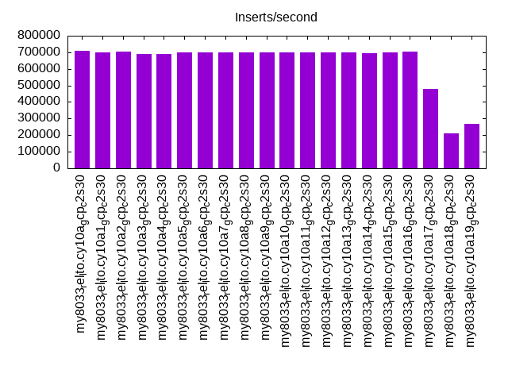
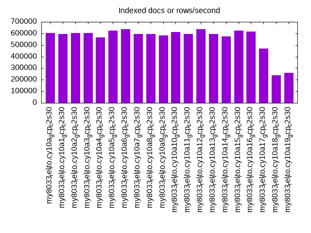
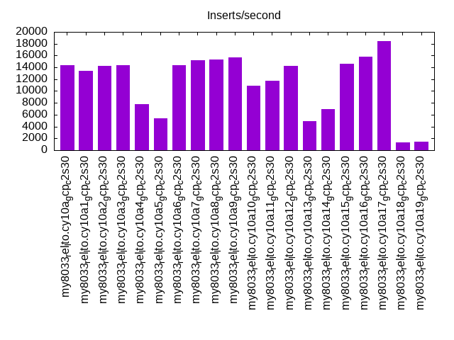
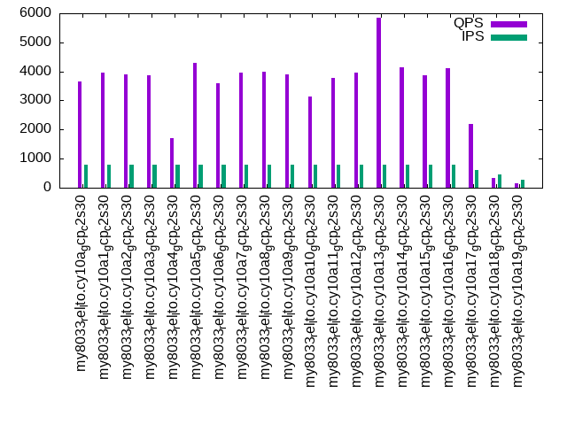
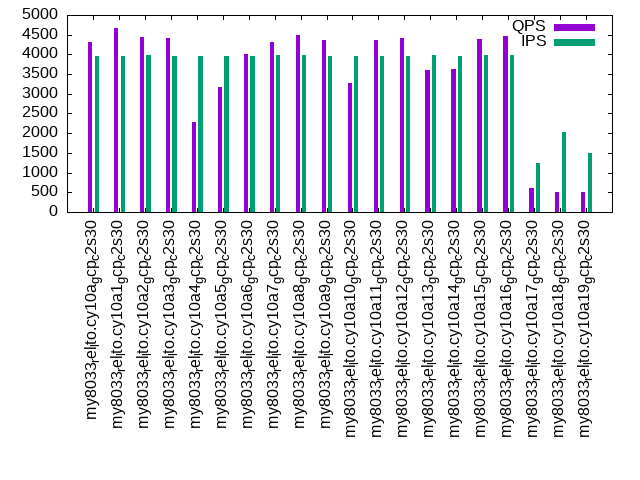
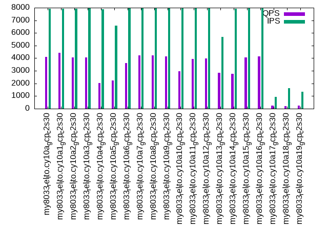

This is a report for the insert benchmark with 4000M docs and 8 client(s). It is generated by scripts (bash, awk, sed) and Tufte might not be impressed. An overview of the insert benchmark is here and a short update is here. Below, by DBMS, I mean DBMS+version.config. An example is my8020.c10b40 where my means MySQL, 8020 is version 8.0.20 and c10b40 is the name for the configuration file.
The test server is a c2-standard-30 from GCP with 15 cores, hyperthreads disabled, 120G RAM, XFS + SW RAID 0 on 4 NVMe devices (1.5TB). The benchmark was run with 8 client and there were 1 or 3 connections per client (1 for queries or inserts without rate limits, 1+1 for rate limited inserts+deletes). There are 8 tables, client per table. It loads 4000M rows without secondary indexes, creates secondary indexes, then inserts 80M rows with a delete per insert to avoid growing the table. It then does 3 read+write tests for 1800s each that do queries as fast as possible with 100, 500 and then 1000 inserts/second/client concurrent with the queries and 1000 deletes/second to avoid growing the table. The database is larger than memory.
The tested DBMS are:
The numbers are inserts/s for l.i0 and l.i1, indexed docs (or rows) /s for l.x and queries/s for q*.2. The values are the average rate over the entire test for inserts (IPS) and queries (QPS). The range of values for IPS and QPS is split into 3 parts: bottom 25%, middle 50%, top 25%. Values in the bottom 25% have a red background, values in the top 25% have a green background and values in the middle have no color. A gray background is used for values that can be ignored because the DBMS did not sustain the target insert rate. Red backgrounds are not used when the minimum value is within 80% of the max value.
| dbms | l.i0 | l.x | l.i1 | q100.1 | q500.1 | q1000.1 |
|---|---|---|---|---|---|---|
| my8033_rel_lto.cy10a_gcp_c2s30 | 706964 | 603060 | 14409 | 3665 | 4303 | 4103 |
| my8033_rel_lto.cy10a1_gcp_c2s30 | 698202 | 595519 | 13443 | 3968 | 4660 | 4418 |
| my8033_rel_lto.cy10a2_gcp_c2s30 | 702494 | 601519 | 14237 | 3900 | 4436 | 4046 |
| my8033_rel_lto.cy10a3_gcp_c2s30 | 690488 | 601609 | 14383 | 3868 | 4420 | 4066 |
| my8033_rel_lto.cy10a4_gcp_c2s30 | 691682 | 566586 | 7807 | 1716 | 2273 | 2015 |
| my8033_rel_lto.cy10a5_gcp_c2s30 | 699178 | 626484 | 5385 | 4282 | 3185 | 2228 |
| my8033_rel_lto.cy10a6_gcp_c2s30 | 697350 | 635037 | 14370 | 3587 | 4011 | 3619 |
| my8033_rel_lto.cy10a7_gcp_c2s30 | 700280 | 595342 | 15172 | 3970 | 4314 | 4231 |
| my8033_rel_lto.cy10a8_gcp_c2s30 | 700158 | 596318 | 15352 | 3985 | 4500 | 4224 |
| my8033_rel_lto.cy10a9_gcp_c2s30 | 699790 | 581410 | 15708 | 3903 | 4356 | 4162 |
| my8033_rel_lto.cy10a10_gcp_c2s30 | 698812 | 612198 | 10861 | 3123 | 3283 | 2974 |
| my8033_rel_lto.cy10a11_gcp_c2s30 | 697472 | 596229 | 11698 | 3789 | 4370 | 3941 |
| my8033_rel_lto.cy10a12_gcp_c2s30 | 699178 | 636958 | 14245 | 3956 | 4416 | 3970 |
| my8033_rel_lto.cy10a13_gcp_c2s30 | 700771 | 595342 | 4876 | 5853 | 3616 | 2824 |
| my8033_rel_lto.cy10a14_gcp_c2s30 | 696986 | 573327 | 6949 | 4153 | 3634 | 2774 |
| my8033_rel_lto.cy10a15_gcp_c2s30 | 699790 | 624138 | 14606 | 3867 | 4382 | 4081 |
| my8033_rel_lto.cy10a16_gcp_c2s30 | 702247 | 616538 | 15823 | 4098 | 4462 | 4161 |
| my8033_rel_lto.cy10a17_gcp_c2s30 | 479042 | 468231 | 18442 | 2201 | 610 | 259 |
| my8033_rel_lto.cy10a18_gcp_c2s30 | 212495 | 238912 | 1258 | 345 | 504 | 187 |
| my8033_rel_lto.cy10a19_gcp_c2s30 | 268709 | 259275 | 1408 | 166 | 519 | 247 |
This table has relative throughput, throughput for the DBMS relative to the DBMS in the first line, using the absolute throughput from the previous table. Values less than 0.95 have a yellow background. Values greater than 1.05 have a blue background.
| dbms | l.i0 | l.x | l.i1 | q100.1 | q500.1 | q1000.1 |
|---|---|---|---|---|---|---|
| my8033_rel_lto.cy10a_gcp_c2s30 | 1.00 | 1.00 | 1.00 | 1.00 | 1.00 | 1.00 |
| my8033_rel_lto.cy10a1_gcp_c2s30 | 0.99 | 0.99 | 0.93 | 1.08 | 1.08 | 1.08 |
| my8033_rel_lto.cy10a2_gcp_c2s30 | 0.99 | 1.00 | 0.99 | 1.06 | 1.03 | 0.99 |
| my8033_rel_lto.cy10a3_gcp_c2s30 | 0.98 | 1.00 | 1.00 | 1.06 | 1.03 | 0.99 |
| my8033_rel_lto.cy10a4_gcp_c2s30 | 0.98 | 0.94 | 0.54 | 0.47 | 0.53 | 0.49 |
| my8033_rel_lto.cy10a5_gcp_c2s30 | 0.99 | 1.04 | 0.37 | 1.17 | 0.74 | 0.54 |
| my8033_rel_lto.cy10a6_gcp_c2s30 | 0.99 | 1.05 | 1.00 | 0.98 | 0.93 | 0.88 |
| my8033_rel_lto.cy10a7_gcp_c2s30 | 0.99 | 0.99 | 1.05 | 1.08 | 1.00 | 1.03 |
| my8033_rel_lto.cy10a8_gcp_c2s30 | 0.99 | 0.99 | 1.07 | 1.09 | 1.05 | 1.03 |
| my8033_rel_lto.cy10a9_gcp_c2s30 | 0.99 | 0.96 | 1.09 | 1.06 | 1.01 | 1.01 |
| my8033_rel_lto.cy10a10_gcp_c2s30 | 0.99 | 1.02 | 0.75 | 0.85 | 0.76 | 0.72 |
| my8033_rel_lto.cy10a11_gcp_c2s30 | 0.99 | 0.99 | 0.81 | 1.03 | 1.02 | 0.96 |
| my8033_rel_lto.cy10a12_gcp_c2s30 | 0.99 | 1.06 | 0.99 | 1.08 | 1.03 | 0.97 |
| my8033_rel_lto.cy10a13_gcp_c2s30 | 0.99 | 0.99 | 0.34 | 1.60 | 0.84 | 0.69 |
| my8033_rel_lto.cy10a14_gcp_c2s30 | 0.99 | 0.95 | 0.48 | 1.13 | 0.84 | 0.68 |
| my8033_rel_lto.cy10a15_gcp_c2s30 | 0.99 | 1.03 | 1.01 | 1.06 | 1.02 | 0.99 |
| my8033_rel_lto.cy10a16_gcp_c2s30 | 0.99 | 1.02 | 1.10 | 1.12 | 1.04 | 1.01 |
| my8033_rel_lto.cy10a17_gcp_c2s30 | 0.68 | 0.78 | 1.28 | 0.60 | 0.14 | 0.06 |
| my8033_rel_lto.cy10a18_gcp_c2s30 | 0.30 | 0.40 | 0.09 | 0.09 | 0.12 | 0.05 |
| my8033_rel_lto.cy10a19_gcp_c2s30 | 0.38 | 0.43 | 0.10 | 0.05 | 0.12 | 0.06 |
This lists the average rate of inserts/s for the tests that do inserts concurrent with queries. For such tests the query rate is listed in the table above. The read+write tests are setup so that the insert rate should match the target rate every second. Cells that are not at least 95% of the target have a red background to indicate a failure to satisfy the target.
| dbms | q100.1 | q500.1 | q1000.1 |
|---|---|---|---|
| my8033_rel_lto.cy10a_gcp_c2s30 | 792 | 3958 | 7908 |
| my8033_rel_lto.cy10a1_gcp_c2s30 | 789 | 3960 | 7925 |
| my8033_rel_lto.cy10a2_gcp_c2s30 | 792 | 3974 | 7938 |
| my8033_rel_lto.cy10a3_gcp_c2s30 | 791 | 3971 | 7943 |
| my8033_rel_lto.cy10a4_gcp_c2s30 | 783 | 3950 | 7882 |
| my8033_rel_lto.cy10a5_gcp_c2s30 | 792 | 3960 | 6572 |
| my8033_rel_lto.cy10a6_gcp_c2s30 | 792 | 3971 | 7943 |
| my8033_rel_lto.cy10a7_gcp_c2s30 | 792 | 3976 | 7943 |
| my8033_rel_lto.cy10a8_gcp_c2s30 | 792 | 3974 | 7943 |
| my8033_rel_lto.cy10a9_gcp_c2s30 | 792 | 3969 | 7943 |
| my8033_rel_lto.cy10a10_gcp_c2s30 | 793 | 3971 | 7947 |
| my8033_rel_lto.cy10a11_gcp_c2s30 | 792 | 3971 | 7943 |
| my8033_rel_lto.cy10a12_gcp_c2s30 | 792 | 3971 | 7947 |
| my8033_rel_lto.cy10a13_gcp_c2s30 | 796 | 3980 | 5676 |
| my8033_rel_lto.cy10a14_gcp_c2s30 | 791 | 3971 | 7938 |
| my8033_rel_lto.cy10a15_gcp_c2s30 | 792 | 3974 | 7943 |
| my8033_rel_lto.cy10a16_gcp_c2s30 | 792 | 3974 | 7947 |
| my8033_rel_lto.cy10a17_gcp_c2s30 | 613 | 1239 | 954 |
| my8033_rel_lto.cy10a18_gcp_c2s30 | 451 | 2039 | 1634 |
| my8033_rel_lto.cy10a19_gcp_c2s30 | 284 | 1502 | 1333 |
| target | 800 | 4000 | 8000 |
l.i0: load without secondary indexes. Graphs for performance per 1-second interval are here.
Average throughput:
Insert response time histogram: each cell has the percentage of responses that take <= the time in the header and max is the max response time in seconds. For the max column values in the top 25% of the range have a red background and in the bottom 25% of the range have a green background. The red background is not used when the min value is within 80% of the max value.
| dbms | 256us | 1ms | 4ms | 16ms | 64ms | 256ms | 1s | 4s | 16s | gt | max |
|---|---|---|---|---|---|---|---|---|---|---|---|
| my8033_rel_lto.cy10a_gcp_c2s30 | 9.653 | 90.247 | 0.066 | 0.019 | 0.014 | 0.001 | 0.400 | ||||
| my8033_rel_lto.cy10a1_gcp_c2s30 | 8.006 | 91.895 | 0.067 | 0.018 | 0.015 | nonzero | 0.589 | ||||
| my8033_rel_lto.cy10a2_gcp_c2s30 | 6.319 | 93.579 | 0.070 | 0.017 | 0.014 | 0.001 | 0.307 | ||||
| my8033_rel_lto.cy10a3_gcp_c2s30 | 2.080 | 97.817 | 0.072 | 0.017 | 0.014 | 0.001 | 0.303 | ||||
| my8033_rel_lto.cy10a4_gcp_c2s30 | 8.013 | 91.734 | 0.223 | 0.016 | 0.015 | 0.248 | |||||
| my8033_rel_lto.cy10a5_gcp_c2s30 | 4.165 | 95.735 | 0.068 | 0.017 | 0.014 | nonzero | 0.292 | ||||
| my8033_rel_lto.cy10a6_gcp_c2s30 | 4.450 | 95.446 | 0.068 | 0.021 | 0.014 | 0.001 | nonzero | 1.017 | |||
| my8033_rel_lto.cy10a7_gcp_c2s30 | 5.517 | 94.378 | 0.074 | 0.017 | 0.014 | 0.001 | 0.559 | ||||
| my8033_rel_lto.cy10a8_gcp_c2s30 | 4.579 | 95.321 | 0.065 | 0.020 | 0.014 | 0.001 | 0.537 | ||||
| my8033_rel_lto.cy10a9_gcp_c2s30 | 5.280 | 94.617 | 0.067 | 0.020 | 0.014 | 0.001 | 0.475 | ||||
| my8033_rel_lto.cy10a10_gcp_c2s30 | 6.517 | 93.368 | 0.080 | 0.020 | 0.014 | 0.001 | 0.578 | ||||
| my8033_rel_lto.cy10a11_gcp_c2s30 | 5.683 | 94.197 | 0.073 | 0.033 | 0.014 | nonzero | 0.293 | ||||
| my8033_rel_lto.cy10a12_gcp_c2s30 | 5.801 | 94.085 | 0.071 | 0.027 | 0.014 | 0.001 | 0.479 | ||||
| my8033_rel_lto.cy10a13_gcp_c2s30 | 6.159 | 93.740 | 0.071 | 0.015 | 0.014 | 0.001 | 0.374 | ||||
| my8033_rel_lto.cy10a14_gcp_c2s30 | 4.178 | 95.724 | 0.066 | 0.017 | 0.014 | 0.001 | 0.298 | ||||
| my8033_rel_lto.cy10a15_gcp_c2s30 | 5.587 | 94.314 | 0.067 | 0.017 | 0.014 | 0.001 | 0.293 | ||||
| my8033_rel_lto.cy10a16_gcp_c2s30 | 5.717 | 94.183 | 0.065 | 0.020 | 0.014 | 0.001 | 0.570 | ||||
| my8033_rel_lto.cy10a17_gcp_c2s30 | 8.799 | 91.102 | 0.056 | 0.017 | 0.011 | 0.006 | 0.005 | 0.002 | 0.001 | 50.411 | |
| my8033_rel_lto.cy10a18_gcp_c2s30 | 30.905 | 68.993 | 0.041 | 0.010 | 0.009 | 0.003 | 0.006 | 0.031 | 0.002 | 61.200 | |
| my8033_rel_lto.cy10a19_gcp_c2s30 | 35.043 | 64.855 | 0.038 | 0.011 | 0.009 | 0.007 | 0.016 | 0.021 | 0.001 | 73.691 |
Performance metrics for the DBMS listed above. Some are normalized by throughput, others are not. Legend for results is here.
ips qps rps rmbps wps wmbps rpq rkbpq wpi wkbpi csps cpups cspq cpupq dbgb1 dbgb2 rss maxop p50 p99 tag 706964 0 0 0.0 3705.8 202.7 0.000 0.000 0.005 0.294 172612 76.8 0.244 16 262.1 390.7 86.9 0.400 90802 69625 4000m.my8033_rel_lto.cy10a_gcp_c2s30 698202 0 0 0.0 3656.6 200.2 0.000 0.000 0.005 0.294 174273 77.2 0.250 17 262.1 390.7 86.9 0.589 89703 70248 4000m.my8033_rel_lto.cy10a1_gcp_c2s30 702494 0 0 0.0 3719.9 202.2 0.000 0.000 0.005 0.295 173465 77.0 0.247 16 262.1 390.7 86.9 0.307 89738 69425 4000m.my8033_rel_lto.cy10a2_gcp_c2s30 690488 0 0 0.0 3657.9 199.2 0.000 0.000 0.005 0.295 152517 76.8 0.221 17 262.1 390.7 86.9 0.303 88135 68026 4000m.my8033_rel_lto.cy10a3_gcp_c2s30 691682 0 0 0.0 1565.2 188.8 0.000 0.000 0.002 0.279 175154 76.9 0.253 17 262.1 390.7 86.9 0.248 88334 70248 4000m.my8033_rel_lto.cy10a4_gcp_c2s30 699178 0 0 0.0 3666.7 200.8 0.000 0.000 0.005 0.294 164117 76.8 0.235 16 262.1 390.7 86.9 0.292 89733 69625 4000m.my8033_rel_lto.cy10a5_gcp_c2s30 697350 0 0 0.0 3653.3 200.1 0.000 0.000 0.005 0.294 170603 76.8 0.245 17 262.1 390.7 86.9 1.017 89502 68226 4000m.my8033_rel_lto.cy10a6_gcp_c2s30 700280 0 0 0.0 3669.9 200.6 0.000 0.000 0.005 0.293 168965 76.8 0.241 16 262.1 390.7 86.7 0.559 89932 70423 4000m.my8033_rel_lto.cy10a7_gcp_c2s30 700158 0 0 0.0 3668.7 200.8 0.000 0.000 0.005 0.294 163362 76.9 0.233 16 262.1 390.7 86.5 0.537 89503 69624 4000m.my8033_rel_lto.cy10a8_gcp_c2s30 699790 0 0 0.0 3669.7 200.9 0.000 0.000 0.005 0.294 162072 76.7 0.232 16 262.1 390.7 86.0 0.475 89802 69447 4000m.my8033_rel_lto.cy10a9_gcp_c2s30 698812 0 0 0.0 3669.4 200.7 0.000 0.000 0.005 0.294 170982 76.7 0.245 16 262.1 390.7 86.9 0.578 89703 69071 4000m.my8033_rel_lto.cy10a10_gcp_c2s30 697472 0 0 0.0 3803.9 204.9 0.000 0.000 0.005 0.301 172656 76.7 0.248 16 262.1 278.7 86.9 0.293 89503 69525 4000m.my8033_rel_lto.cy10a11_gcp_c2s30 699178 0 0 0.0 3787.1 204.2 0.000 0.000 0.005 0.299 168491 76.8 0.241 16 262.1 294.7 86.9 0.479 89503 69425 4000m.my8033_rel_lto.cy10a12_gcp_c2s30 700771 0 0 0.0 3675.5 201.4 0.000 0.000 0.005 0.294 169280 76.9 0.242 16 262.1 390.7 86.9 0.374 89903 69457 4000m.my8033_rel_lto.cy10a13_gcp_c2s30 696986 0 0 0.0 3651.4 199.7 0.000 0.000 0.005 0.293 167967 77.0 0.241 17 262.1 390.7 86.9 0.298 89003 69524 4000m.my8033_rel_lto.cy10a14_gcp_c2s30 699790 0 0 0.0 3669.1 200.7 0.000 0.000 0.005 0.294 167740 76.9 0.240 16 262.1 390.7 86.9 0.293 89602 69925 4000m.my8033_rel_lto.cy10a15_gcp_c2s30 702247 0 0 0.0 3379.3 193.0 0.000 0.000 0.005 0.281 170869 76.9 0.243 16 262.1 390.7 86.9 0.570 89704 69225 4000m.my8033_rel_lto.cy10a16_gcp_c2s30 479042 0 0 0.0 2150.9 104.9 0.000 0.000 0.004 0.224 121252 53.5 0.253 17 262.1 390.7 86.9 50.411 87308 0 4000m.my8033_rel_lto.cy10a17_gcp_c2s30 212495 0 0 0.0 976.5 57.1 0.000 0.000 0.005 0.275 41323 24.1 0.194 17 262.1 390.8 86.9 61.200 0 0 4000m.my8033_rel_lto.cy10a18_gcp_c2s30 268709 0 0 0.0 1236.8 72.2 0.000 0.000 0.005 0.275 53931 30.0 0.201 17 262.1 390.7 86.9 73.691 400 0 4000m.my8033_rel_lto.cy10a19_gcp_c2s30
l.x: create secondary indexes.
Average throughput:
Performance metrics for the DBMS listed above. Some are normalized by throughput, others are not. Legend for results is here.
ips qps rps rmbps wps wmbps rpq rkbpq wpi wkbpi csps cpups cspq cpupq dbgb1 dbgb2 rss maxop p50 p99 tag 603060 0 7642 649.2 12691.7 773.2 0.013 1.102 0.021 1.313 55738 57.3 0.092 14 586.1 714.7 86.9 0.004 NA NA 4000m.my8033_rel_lto.cy10a_gcp_c2s30 595519 0 7534 649.4 12700.9 758.6 0.013 1.117 0.021 1.304 59252 54.5 0.099 14 586.1 714.7 86.9 0.003 NA NA 4000m.my8033_rel_lto.cy10a1_gcp_c2s30 601519 0 7610 646.3 12555.8 773.9 0.013 1.100 0.021 1.317 49161 56.9 0.082 14 586.1 714.7 86.9 0.020 NA NA 4000m.my8033_rel_lto.cy10a2_gcp_c2s30 601609 0 7583 654.8 12639.4 767.0 0.013 1.114 0.021 1.306 49183 54.4 0.082 14 586.1 714.7 86.9 0.004 NA NA 4000m.my8033_rel_lto.cy10a3_gcp_c2s30 566586 0 5387 613.7 11295.7 719.2 0.010 1.109 0.020 1.300 88068 56.0 0.155 15 586.1 714.7 86.9 0.007 NA NA 4000m.my8033_rel_lto.cy10a4_gcp_c2s30 626484 0 7916 680.8 13274.0 800.9 0.013 1.113 0.021 1.309 57142 56.3 0.091 13 586.1 714.7 86.9 0.009 NA NA 4000m.my8033_rel_lto.cy10a5_gcp_c2s30 635037 0 8032 691.8 13301.2 812.3 0.013 1.116 0.021 1.310 51059 56.5 0.080 13 586.1 714.7 86.9 0.004 NA NA 4000m.my8033_rel_lto.cy10a6_gcp_c2s30 595342 0 7590 639.4 12596.9 766.4 0.013 1.100 0.021 1.318 56882 58.1 0.096 15 586.1 714.7 86.9 0.005 NA NA 4000m.my8033_rel_lto.cy10a7_gcp_c2s30 596318 0 7578 635.9 12556.0 764.5 0.013 1.092 0.021 1.313 46046 55.5 0.077 14 586.1 714.7 86.9 0.004 NA NA 4000m.my8033_rel_lto.cy10a8_gcp_c2s30 581410 0 7329 623.3 12290.1 746.6 0.013 1.098 0.021 1.315 51556 56.3 0.089 15 586.1 714.7 86.9 0.004 NA NA 4000m.my8033_rel_lto.cy10a9_gcp_c2s30 612198 0 7734 659.9 12686.4 784.9 0.013 1.104 0.021 1.313 58922 57.9 0.096 14 586.1 714.7 86.9 0.005 NA NA 4000m.my8033_rel_lto.cy10a10_gcp_c2s30 596229 0 7546 641.5 12405.9 760.4 0.013 1.102 0.021 1.306 47315 55.6 0.079 14 586.1 602.7 86.9 0.006 NA NA 4000m.my8033_rel_lto.cy10a11_gcp_c2s30 636958 0 8017 686.3 13386.9 809.4 0.013 1.103 0.021 1.301 47913 56.5 0.075 13 586.1 618.7 86.9 0.006 NA NA 4000m.my8033_rel_lto.cy10a12_gcp_c2s30 595342 0 7592 646.3 12574.2 761.2 0.013 1.112 0.021 1.309 51538 55.3 0.087 14 586.1 714.7 86.9 0.004 NA NA 4000m.my8033_rel_lto.cy10a13_gcp_c2s30 573327 0 7247 607.7 12121.1 734.1 0.013 1.085 0.021 1.311 62334 57.8 0.109 15 586.1 714.7 86.9 0.004 NA NA 4000m.my8033_rel_lto.cy10a14_gcp_c2s30 624138 0 7882 670.0 13090.3 804.9 0.013 1.099 0.021 1.321 53851 58.8 0.086 14 586.1 714.7 86.9 0.009 NA NA 4000m.my8033_rel_lto.cy10a15_gcp_c2s30 616538 0 7855 675.1 13467.7 793.4 0.013 1.121 0.022 1.318 56139 58.4 0.091 14 586.1 714.7 86.9 0.004 NA NA 4000m.my8033_rel_lto.cy10a16_gcp_c2s30 468231 0 5932 506.6 8570.7 566.5 0.013 1.108 0.018 1.239 31904 41.9 0.068 13 586.1 714.7 86.9 0.013 NA NA 4000m.my8033_rel_lto.cy10a17_gcp_c2s30 238912 0 2867 231.1 5403.7 313.9 0.012 0.990 0.023 1.345 54440 30.2 0.228 19 586.1 714.8 86.9 5.718 NA NA 4000m.my8033_rel_lto.cy10a18_gcp_c2s30 259275 0 3014 251.6 5803.9 347.3 0.012 0.994 0.022 1.372 31903 27.2 0.123 16 586.1 714.7 86.9 0.002 NA NA 4000m.my8033_rel_lto.cy10a19_gcp_c2s30
l.i1: continue load after secondary indexes created. Graphs for performance per 1-second interval are here.
Average throughput:
Insert response time histogram: each cell has the percentage of responses that take <= the time in the header and max is the max response time in seconds. For the max column values in the top 25% of the range have a red background and in the bottom 25% of the range have a green background. The red background is not used when the min value is within 80% of the max value.
| dbms | 256us | 1ms | 4ms | 16ms | 64ms | 256ms | 1s | 4s | 16s | gt | max |
|---|---|---|---|---|---|---|---|---|---|---|---|
| my8033_rel_lto.cy10a_gcp_c2s30 | 0.284 | 58.228 | 30.087 | 11.341 | 0.059 | 0.001 | 1.173 | ||||
| my8033_rel_lto.cy10a1_gcp_c2s30 | 0.416 | 54.852 | 32.179 | 12.540 | 0.013 | 0.593 | |||||
| my8033_rel_lto.cy10a2_gcp_c2s30 | 0.199 | 56.315 | 31.956 | 11.474 | 0.051 | 0.005 | 1.662 | ||||
| my8033_rel_lto.cy10a3_gcp_c2s30 | 0.313 | 57.384 | 30.936 | 11.326 | 0.039 | 0.002 | 1.428 | ||||
| my8033_rel_lto.cy10a4_gcp_c2s30 | 0.217 | 41.323 | 37.698 | 16.850 | 3.911 | 0.001 | nonzero | 4.852 | |||
| my8033_rel_lto.cy10a5_gcp_c2s30 | 43.992 | 55.826 | 0.182 | 0.926 | |||||||
| my8033_rel_lto.cy10a6_gcp_c2s30 | 0.283 | 55.772 | 32.724 | 11.213 | 0.008 | nonzero | 1.018 | ||||
| my8033_rel_lto.cy10a7_gcp_c2s30 | 0.640 | 60.520 | 27.754 | 11.072 | 0.013 | 0.845 | |||||
| my8033_rel_lto.cy10a8_gcp_c2s30 | 1.097 | 63.297 | 24.466 | 11.032 | 0.107 | 0.001 | 1.368 | ||||
| my8033_rel_lto.cy10a9_gcp_c2s30 | 1.047 | 63.452 | 24.594 | 10.899 | 0.007 | 0.376 | |||||
| my8033_rel_lto.cy10a10_gcp_c2s30 | 0.003 | 24.002 | 60.997 | 14.963 | 0.037 | 0.576 | |||||
| my8033_rel_lto.cy10a11_gcp_c2s30 | 0.090 | 54.907 | 34.212 | 9.907 | 0.405 | 0.478 | 3.122 | ||||
| my8033_rel_lto.cy10a12_gcp_c2s30 | 0.184 | 55.200 | 33.287 | 11.314 | 0.015 | 0.663 | |||||
| my8033_rel_lto.cy10a13_gcp_c2s30 | 0.008 | 47.474 | 52.507 | 0.011 | 0.305 | ||||||
| my8033_rel_lto.cy10a14_gcp_c2s30 | 8.281 | 51.924 | 24.564 | 15.227 | 0.003 | 0.288 | |||||
| my8033_rel_lto.cy10a15_gcp_c2s30 | 0.519 | 58.086 | 30.161 | 11.230 | 0.004 | 0.312 | |||||
| my8033_rel_lto.cy10a16_gcp_c2s30 | 0.378 | 63.236 | 26.181 | 10.185 | 0.020 | 0.001 | 1.114 | ||||
| my8033_rel_lto.cy10a17_gcp_c2s30 | 1.495 | 67.484 | 24.494 | 6.450 | 0.037 | 0.024 | 0.017 | 11.816 | |||
| my8033_rel_lto.cy10a18_gcp_c2s30 | 55.063 | 27.054 | 9.381 | 2.553 | 1.561 | 0.689 | 3.624 | 0.075 | 35.541 | ||
| my8033_rel_lto.cy10a19_gcp_c2s30 | 51.519 | 31.318 | 9.514 | 2.335 | 0.994 | 0.989 | 3.274 | 0.057 | 134.824 |
Delete response time histogram: each cell has the percentage of responses that take <= the time in the header and max is the max response time in seconds. For the max column values in the top 25% of the range have a red background and in the bottom 25% of the range have a green background. The red background is not used when the min value is within 80% of the max value.
| dbms | 256us | 1ms | 4ms | 16ms | 64ms | 256ms | 1s | 4s | 16s | gt | max |
|---|---|---|---|---|---|---|---|---|---|---|---|
| my8033_rel_lto.cy10a_gcp_c2s30 | 20.029 | 75.873 | 3.865 | 0.232 | nonzero | 0.328 | |||||
| my8033_rel_lto.cy10a1_gcp_c2s30 | 21.293 | 73.682 | 4.622 | 0.397 | 0.006 | 0.535 | |||||
| my8033_rel_lto.cy10a2_gcp_c2s30 | 20.250 | 74.262 | 5.282 | 0.205 | 0.001 | 0.336 | |||||
| my8033_rel_lto.cy10a3_gcp_c2s30 | 21.156 | 73.819 | 4.874 | 0.151 | 0.001 | 0.379 | |||||
| my8033_rel_lto.cy10a4_gcp_c2s30 | 16.544 | 70.259 | 13.050 | 0.146 | 0.247 | ||||||
| my8033_rel_lto.cy10a5_gcp_c2s30 | 79.940 | 20.019 | 0.041 | 0.553 | |||||||
| my8033_rel_lto.cy10a6_gcp_c2s30 | 18.786 | 76.263 | 4.718 | 0.232 | 0.239 | ||||||
| my8033_rel_lto.cy10a7_gcp_c2s30 | 20.449 | 75.948 | 3.386 | 0.218 | 0.200 | ||||||
| my8033_rel_lto.cy10a8_gcp_c2s30 | 24.057 | 72.885 | 2.865 | 0.193 | nonzero | 0.384 | |||||
| my8033_rel_lto.cy10a9_gcp_c2s30 | 24.129 | 72.920 | 2.775 | 0.176 | 0.197 | ||||||
| my8033_rel_lto.cy10a10_gcp_c2s30 | 23.892 | 72.390 | 3.538 | 0.180 | nonzero | 0.278 | |||||
| my8033_rel_lto.cy10a11_gcp_c2s30 | 17.724 | 75.703 | 6.175 | 0.172 | 0.103 | 0.123 | 3.042 | ||||
| my8033_rel_lto.cy10a12_gcp_c2s30 | 19.221 | 75.566 | 5.056 | 0.157 | nonzero | 0.257 | |||||
| my8033_rel_lto.cy10a13_gcp_c2s30 | 52.146 | 17.382 | 10.849 | 19.623 | 0.181 | ||||||
| my8033_rel_lto.cy10a14_gcp_c2s30 | 93.013 | 6.987 | 0.177 | ||||||||
| my8033_rel_lto.cy10a15_gcp_c2s30 | 19.904 | 75.942 | 3.924 | 0.230 | 0.240 | ||||||
| my8033_rel_lto.cy10a16_gcp_c2s30 | 21.511 | 74.892 | 3.526 | 0.071 | 0.134 | ||||||
| my8033_rel_lto.cy10a17_gcp_c2s30 | 23.912 | 70.929 | 4.918 | 0.208 | 0.009 | 0.012 | 0.010 | 11.807 | |||
| my8033_rel_lto.cy10a18_gcp_c2s30 | 91.212 | 7.698 | 0.140 | 0.038 | 0.281 | 0.285 | 0.345 | 0.001 | 30.302 | ||
| my8033_rel_lto.cy10a19_gcp_c2s30 | 89.722 | 9.197 | 0.166 | 0.056 | 0.115 | 0.150 | 0.585 | 0.009 | 122.874 |
Performance metrics for the DBMS listed above. Some are normalized by throughput, others are not. Legend for results is here.
ips qps rps rmbps wps wmbps rpq rkbpq wpi wkbpi csps cpups cspq cpupq dbgb1 dbgb2 rss maxop p50 p99 tag 14409 0 17044 266.3 34543.3 775.6 1.183 18.926 2.397 55.118 175995 37.2 12.214 387 809.0 975.5 86.9 1.173 999 250 4000m.my8033_rel_lto.cy10a_gcp_c2s30 13443 0 15818 247.2 31592.7 720.3 1.177 18.827 2.350 54.868 191914 36.3 14.276 405 809.1 975.5 86.9 0.593 949 250 4000m.my8033_rel_lto.cy10a1_gcp_c2s30 14237 0 17273 269.9 35841.2 794.6 1.213 19.411 2.517 57.147 180383 37.3 12.670 393 809.1 973.5 86.9 1.662 999 200 4000m.my8033_rel_lto.cy10a2_gcp_c2s30 14383 0 17260 269.7 36269.5 798.9 1.200 19.200 2.522 56.874 180835 36.7 12.573 383 809.1 973.8 86.9 1.428 999 250 4000m.my8033_rel_lto.cy10a3_gcp_c2s30 7807 0 8814 245.5 18080.1 418.5 1.129 32.199 2.316 54.898 268014 26.0 34.329 500 809.3 977.4 86.9 4.852 400 100 4000m.my8033_rel_lto.cy10a4_gcp_c2s30 5385 0 25667 401.1 48026.5 921.5 4.767 76.269 8.919 175.247 180834 17.5 33.584 488 807.5 941.1 86.9 0.926 749 200 4000m.my8033_rel_lto.cy10a5_gcp_c2s30 14370 0 17020 265.9 35248.5 790.8 1.184 18.950 2.453 56.348 179048 38.1 12.460 398 809.0 975.2 86.9 1.018 1049 250 4000m.my8033_rel_lto.cy10a6_gcp_c2s30 15172 0 17877 279.3 34170.5 781.1 1.178 18.853 2.252 52.723 179120 38.7 11.806 383 808.9 974.3 86.9 0.845 999 300 4000m.my8033_rel_lto.cy10a7_gcp_c2s30 15352 0 17860 279.1 33528.4 762.3 1.163 18.614 2.184 50.845 177319 36.9 11.550 361 809.0 974.9 86.9 1.368 899 100 4000m.my8033_rel_lto.cy10a8_gcp_c2s30 15708 0 18230 284.9 34159.4 768.7 1.161 18.570 2.175 50.113 179818 37.6 11.448 359 809.0 975.0 86.9 0.376 999 300 4000m.my8033_rel_lto.cy10a9_gcp_c2s30 10861 0 24054 375.8 43115.7 982.2 2.215 35.435 3.970 92.610 215510 38.9 19.843 537 799.0 955.2 86.9 0.576 1099 300 4000m.my8033_rel_lto.cy10a10_gcp_c2s30 11698 0 14046 219.5 30990.4 727.8 1.201 19.213 2.649 63.711 155762 31.8 13.316 408 809.0 864.1 86.9 3.122 749 50 4000m.my8033_rel_lto.cy10a11_gcp_c2s30 14245 0 16942 264.7 35596.3 791.5 1.189 19.030 2.499 56.900 180477 37.8 12.670 398 808.9 879.6 86.9 0.663 1049 250 4000m.my8033_rel_lto.cy10a12_gcp_c2s30 4876 0 22665 354.1 43398.4 865.0 4.649 74.377 8.901 181.678 188328 24.5 38.627 754 714.7 845.6 87.0 0.305 500 250 4000m.my8033_rel_lto.cy10a13_gcp_c2s30 6949 0 23193 362.4 43692.2 865.7 3.338 53.405 6.288 127.574 172725 20.3 24.858 438 808.1 944.0 86.9 0.288 999 300 4000m.my8033_rel_lto.cy10a14_gcp_c2s30 14606 0 17244 269.4 35166.6 787.8 1.181 18.889 2.408 55.232 178930 38.1 12.250 391 809.0 975.0 86.9 0.312 999 300 4000m.my8033_rel_lto.cy10a15_gcp_c2s30 15823 0 17943 280.4 33252.4 760.6 1.134 18.144 2.102 49.225 180329 38.8 11.397 368 808.8 976.9 87.0 1.114 1049 300 4000m.my8033_rel_lto.cy10a16_gcp_c2s30 18442 0 19112 298.6 26569.4 511.2 1.036 16.581 1.441 28.387 179272 42.1 9.721 342 809.3 976.3 86.9 11.816 1599 0 4000m.my8033_rel_lto.cy10a17_gcp_c2s30 1258 0 1315 20.6 2424.7 61.0 1.046 16.729 1.928 49.617 22931 2.1 18.230 250 810.6 969.2 86.9 35.541 0 0 4000m.my8033_rel_lto.cy10a18_gcp_c2s30 1408 0 1523 23.8 2755.0 73.4 1.082 17.308 1.957 53.375 23151 2.4 16.444 256 810.5 969.0 86.9 134.824 0 0 4000m.my8033_rel_lto.cy10a19_gcp_c2s30
q100.1: range queries with 100 insert/s per client. Graphs for performance per 1-second interval are here.
Average throughput:
Query response time histogram: each cell has the percentage of responses that take <= the time in the header and max is the max response time in seconds. For max values in the top 25% of the range have a red background and in the bottom 25% of the range have a green background. The red background is not used when the min value is within 80% of the max value.
| dbms | 256us | 1ms | 4ms | 16ms | 64ms | 256ms | 1s | 4s | 16s | gt | max |
|---|---|---|---|---|---|---|---|---|---|---|---|
| my8033_rel_lto.cy10a_gcp_c2s30 | 33.094 | 6.511 | 48.426 | 11.633 | 0.331 | 0.006 | nonzero | 0.256 | |||
| my8033_rel_lto.cy10a1_gcp_c2s30 | 31.480 | 7.476 | 52.416 | 8.457 | 0.163 | 0.008 | 0.232 | ||||
| my8033_rel_lto.cy10a2_gcp_c2s30 | 35.940 | 5.230 | 47.794 | 10.926 | 0.109 | 0.001 | 0.212 | ||||
| my8033_rel_lto.cy10a3_gcp_c2s30 | 35.011 | 5.735 | 48.194 | 10.940 | 0.118 | 0.001 | 0.206 | ||||
| my8033_rel_lto.cy10a4_gcp_c2s30 | 32.426 | 7.537 | 25.786 | 28.543 | 5.595 | 0.111 | 0.001 | nonzero | 1.412 | ||
| my8033_rel_lto.cy10a5_gcp_c2s30 | 36.240 | 5.550 | 51.068 | 7.141 | 0.001 | 0.057 | |||||
| my8033_rel_lto.cy10a6_gcp_c2s30 | 35.640 | 5.521 | 43.080 | 15.668 | 0.092 | nonzero | 0.161 | ||||
| my8033_rel_lto.cy10a7_gcp_c2s30 | 36.057 | 5.221 | 48.141 | 10.525 | 0.055 | nonzero | 0.151 | ||||
| my8033_rel_lto.cy10a8_gcp_c2s30 | 36.678 | 4.734 | 48.448 | 10.048 | 0.092 | 0.001 | 0.196 | ||||
| my8033_rel_lto.cy10a9_gcp_c2s30 | 36.233 | 5.070 | 47.472 | 11.156 | 0.068 | nonzero | 0.110 | ||||
| my8033_rel_lto.cy10a10_gcp_c2s30 | 26.796 | 10.981 | 39.630 | 22.497 | 0.096 | 0.061 | |||||
| my8033_rel_lto.cy10a11_gcp_c2s30 | 36.020 | 5.247 | 45.960 | 12.671 | 0.101 | 0.001 | 0.169 | ||||
| my8033_rel_lto.cy10a12_gcp_c2s30 | 36.201 | 5.099 | 47.956 | 10.658 | 0.085 | 0.001 | 0.226 | ||||
| my8033_rel_lto.cy10a13_gcp_c2s30 | 44.339 | 2.215 | 51.630 | 1.814 | 0.002 | 0.038 | |||||
| my8033_rel_lto.cy10a14_gcp_c2s30 | 35.986 | 6.034 | 49.491 | 8.485 | 0.004 | 0.062 | |||||
| my8033_rel_lto.cy10a15_gcp_c2s30 | 32.864 | 7.101 | 48.987 | 10.980 | 0.068 | nonzero | 0.124 | ||||
| my8033_rel_lto.cy10a16_gcp_c2s30 | 36.465 | 4.918 | 49.265 | 9.267 | 0.084 | 0.001 | 0.161 | ||||
| my8033_rel_lto.cy10a17_gcp_c2s30 | 35.999 | 4.554 | 48.609 | 10.455 | 0.341 | 0.012 | 0.003 | 0.004 | 0.023 | nonzero | 22.391 |
| my8033_rel_lto.cy10a18_gcp_c2s30 | 38.279 | 1.430 | 48.865 | 10.405 | 0.381 | 0.045 | 0.046 | 0.487 | 0.060 | 0.001 | 28.409 |
| my8033_rel_lto.cy10a19_gcp_c2s30 | 32.859 | 5.405 | 52.725 | 7.377 | 0.538 | 0.364 | 0.072 | 0.035 | 0.622 | 0.003 | 43.020 |
Insert response time histogram: each cell has the percentage of responses that take <= the time in the header and max is the max response time in seconds. For max values in the top 25% of the range have a red background and in the bottom 25% of the range have a green background. The red background is not used when the min value is within 80% of the max value.
| dbms | 256us | 1ms | 4ms | 16ms | 64ms | 256ms | 1s | 4s | 16s | gt | max |
|---|---|---|---|---|---|---|---|---|---|---|---|
| my8033_rel_lto.cy10a_gcp_c2s30 | 9.101 | 83.910 | 6.306 | 0.670 | 0.014 | 0.419 | |||||
| my8033_rel_lto.cy10a1_gcp_c2s30 | 7.726 | 87.090 | 4.667 | 0.517 | 0.215 | ||||||
| my8033_rel_lto.cy10a2_gcp_c2s30 | 14.837 | 78.826 | 5.986 | 0.351 | 0.237 | ||||||
| my8033_rel_lto.cy10a3_gcp_c2s30 | 13.354 | 80.441 | 5.865 | 0.337 | 0.003 | 0.264 | |||||
| my8033_rel_lto.cy10a4_gcp_c2s30 | 2.663 | 56.733 | 37.705 | 2.764 | 0.122 | 0.014 | 1.343 | ||||
| my8033_rel_lto.cy10a5_gcp_c2s30 | 99.764 | 0.236 | 0.082 | ||||||||
| my8033_rel_lto.cy10a6_gcp_c2s30 | 9.017 | 85.003 | 5.774 | 0.205 | 0.213 | ||||||
| my8033_rel_lto.cy10a7_gcp_c2s30 | 11.958 | 84.910 | 3.024 | 0.108 | 0.160 | ||||||
| my8033_rel_lto.cy10a8_gcp_c2s30 | 14.972 | 81.910 | 2.962 | 0.156 | 0.184 | ||||||
| my8033_rel_lto.cy10a9_gcp_c2s30 | 13.785 | 82.740 | 3.392 | 0.083 | 0.138 | ||||||
| my8033_rel_lto.cy10a10_gcp_c2s30 | 67.073 | 32.743 | 0.184 | 0.138 | |||||||
| my8033_rel_lto.cy10a11_gcp_c2s30 | 9.924 | 84.462 | 5.392 | 0.222 | 0.208 | ||||||
| my8033_rel_lto.cy10a12_gcp_c2s30 | 12.111 | 82.743 | 4.875 | 0.271 | 0.234 | ||||||
| my8033_rel_lto.cy10a13_gcp_c2s30 | 7.854 | 91.052 | 1.094 | 0.143 | |||||||
| my8033_rel_lto.cy10a14_gcp_c2s30 | 38.045 | 61.917 | 0.038 | 0.023 | |||||||
| my8033_rel_lto.cy10a15_gcp_c2s30 | 7.847 | 88.115 | 3.823 | 0.215 | 0.169 | ||||||
| my8033_rel_lto.cy10a16_gcp_c2s30 | 8.549 | 89.778 | 1.615 | 0.059 | 0.136 | ||||||
| my8033_rel_lto.cy10a17_gcp_c2s30 | 13.490 | 78.368 | 3.747 | 0.677 | 0.132 | 0.438 | 2.997 | 0.153 | 24.725 | ||
| my8033_rel_lto.cy10a18_gcp_c2s30 | 23.066 | 55.021 | 7.337 | 0.708 | 0.670 | 9.260 | 3.670 | 0.267 | 61.500 | ||
| my8033_rel_lto.cy10a19_gcp_c2s30 | 10.601 | 56.010 | 12.351 | 4.726 | 1.240 | 0.688 | 13.698 | 0.688 | 184.076 |
Delete response time histogram: each cell has the percentage of responses that take <= the time in the header and max is the max response time in seconds. For max values in the top 25% of the range have a red background and in the bottom 25% of the range have a green background. The red background is not used when the min value is within 80% of the max value.
| dbms | 256us | 1ms | 4ms | 16ms | 64ms | 256ms | 1s | 4s | 16s | gt | max |
|---|---|---|---|---|---|---|---|---|---|---|---|
| my8033_rel_lto.cy10a_gcp_c2s30 | 17.757 | 76.295 | 5.337 | 0.594 | 0.017 | 0.419 | |||||
| my8033_rel_lto.cy10a1_gcp_c2s30 | 15.462 | 80.323 | 3.736 | 0.476 | 0.003 | 0.262 | |||||
| my8033_rel_lto.cy10a2_gcp_c2s30 | 25.094 | 69.455 | 5.142 | 0.309 | 0.236 | ||||||
| my8033_rel_lto.cy10a3_gcp_c2s30 | 22.997 | 71.656 | 5.062 | 0.281 | 0.003 | 0.263 | |||||
| my8033_rel_lto.cy10a4_gcp_c2s30 | 4.368 | 60.181 | 33.108 | 2.219 | 0.122 | 0.003 | 1.188 | ||||
| my8033_rel_lto.cy10a5_gcp_c2s30 | 99.792 | 0.208 | 0.089 | ||||||||
| my8033_rel_lto.cy10a6_gcp_c2s30 | 17.556 | 77.392 | 4.882 | 0.170 | 0.212 | ||||||
| my8033_rel_lto.cy10a7_gcp_c2s30 | 23.090 | 74.361 | 2.455 | 0.094 | 0.129 | ||||||
| my8033_rel_lto.cy10a8_gcp_c2s30 | 26.431 | 70.875 | 2.580 | 0.115 | 0.183 | ||||||
| my8033_rel_lto.cy10a9_gcp_c2s30 | 24.760 | 72.243 | 2.920 | 0.076 | 0.129 | ||||||
| my8033_rel_lto.cy10a10_gcp_c2s30 | 10.069 | 86.819 | 3.024 | 0.087 | 0.108 | ||||||
| my8033_rel_lto.cy10a11_gcp_c2s30 | 20.726 | 74.868 | 4.219 | 0.188 | 0.207 | ||||||
| my8033_rel_lto.cy10a12_gcp_c2s30 | 24.292 | 71.510 | 3.962 | 0.236 | 0.229 | ||||||
| my8033_rel_lto.cy10a13_gcp_c2s30 | 95.656 | 4.316 | 0.028 | 0.038 | |||||||
| my8033_rel_lto.cy10a14_gcp_c2s30 | 99.812 | 0.188 | 0.081 | ||||||||
| my8033_rel_lto.cy10a15_gcp_c2s30 | 17.892 | 78.663 | 3.240 | 0.205 | 0.167 | ||||||
| my8033_rel_lto.cy10a16_gcp_c2s30 | 20.049 | 78.632 | 1.288 | 0.031 | 0.161 | ||||||
| my8033_rel_lto.cy10a17_gcp_c2s30 | 19.542 | 72.892 | 3.340 | 0.608 | 0.083 | 0.434 | 2.976 | 0.125 | 24.547 | ||
| my8033_rel_lto.cy10a18_gcp_c2s30 | 24.760 | 52.997 | 7.660 | 0.444 | 0.726 | 9.809 | 3.365 | 0.240 | 61.481 | ||
| my8033_rel_lto.cy10a19_gcp_c2s30 | 12.170 | 53.517 | 13.503 | 4.844 | 1.014 | 0.698 | 13.778 | 0.476 | 196.652 |
Performance metrics for the DBMS listed above. Some are normalized by throughput, others are not. Legend for results is here.
ips qps rps rmbps wps wmbps rpq rkbpq wpi wkbpi csps cpups cspq cpupq dbgb1 dbgb2 rss maxop p50 p99 tag 792 3665 30582 477.8 24325.8 544.8 8.343 133.495 30.714 704.402 158387 24.1 43.211 986 809.0 975.5 86.9 0.256 495 112 4000m.my8033_rel_lto.cy10a_gcp_c2s30 789 3968 31652 494.6 22818.4 521.6 7.977 127.637 28.921 676.965 176915 24.4 44.589 922 809.1 975.5 86.9 0.232 528 144 4000m.my8033_rel_lto.cy10a1_gcp_c2s30 792 3900 32460 507.2 26990.5 589.6 8.324 133.181 34.079 762.268 170285 25.8 43.666 992 809.1 973.6 86.9 0.212 527 192 4000m.my8033_rel_lto.cy10a2_gcp_c2s30 791 3868 32176 502.7 26767.4 582.0 8.318 133.086 33.831 753.301 168876 25.3 43.656 981 809.1 973.8 86.9 0.206 512 176 4000m.my8033_rel_lto.cy10a3_gcp_c2s30 783 1716 12358 991.9 12495.1 289.8 7.200 591.789 15.966 379.156 211793 21.2 123.394 1853 809.3 977.4 86.9 1.412 224 64 4000m.my8033_rel_lto.cy10a4_gcp_c2s30 792 4282 37901 592.2 27121.2 591.6 8.851 141.611 34.261 765.325 176042 21.3 41.109 746 807.5 941.1 86.9 0.057 543 272 4000m.my8033_rel_lto.cy10a5_gcp_c2s30 792 3587 29258 457.2 28271.7 613.4 8.157 130.513 35.697 793.132 164887 24.4 45.969 1020 809.0 975.3 86.9 0.161 463 208 4000m.my8033_rel_lto.cy10a6_gcp_c2s30 792 3970 32304 504.7 25481.2 579.5 8.137 130.198 32.189 749.623 167031 25.2 42.075 952 808.9 974.3 86.9 0.151 527 224 4000m.my8033_rel_lto.cy10a7_gcp_c2s30 792 3985 32242 503.8 26061.3 573.7 8.090 129.442 32.906 741.708 166499 25.0 41.777 941 809.0 974.9 86.9 0.196 527 176 4000m.my8033_rel_lto.cy10a8_gcp_c2s30 792 3903 31794 496.8 25569.1 564.4 8.146 130.337 32.264 729.230 164246 24.9 42.082 957 809.0 975.0 86.9 0.110 511 224 4000m.my8033_rel_lto.cy10a9_gcp_c2s30 793 3123 36577 571.5 36033.5 808.6 11.711 187.367 45.422 1043.796 203076 30.3 65.017 1455 799.0 955.2 86.9 0.061 400 224 4000m.my8033_rel_lto.cy10a10_gcp_c2s30 792 3789 31175 487.1 28860.7 627.3 8.227 131.637 36.417 810.541 169897 25.4 44.837 1005 809.0 864.1 86.9 0.169 496 192 4000m.my8033_rel_lto.cy10a11_gcp_c2s30 792 3956 32493 507.7 27861.1 616.1 8.213 131.404 35.178 796.590 173741 25.9 43.914 982 808.9 879.6 86.9 0.226 527 208 4000m.my8033_rel_lto.cy10a12_gcp_c2s30 796 5853 32732 511.4 13675.4 332.5 5.592 89.475 17.171 427.476 134119 18.4 22.914 472 714.7 845.6 86.9 0.038 783 272 4000m.my8033_rel_lto.cy10a13_gcp_c2s30 791 4153 36012 562.7 27299.7 584.3 8.670 138.726 34.504 756.214 170136 21.2 40.963 766 808.1 944.1 86.9 0.062 528 272 4000m.my8033_rel_lto.cy10a14_gcp_c2s30 792 3867 32108 501.7 25475.2 567.4 8.303 132.844 32.182 733.957 165603 25.4 42.822 985 809.0 975.0 86.9 0.124 511 224 4000m.my8033_rel_lto.cy10a15_gcp_c2s30 792 4098 32627 509.8 25261.4 570.2 7.961 127.376 31.876 736.742 165197 24.8 40.309 908 808.8 976.9 86.9 0.161 528 176 4000m.my8033_rel_lto.cy10a16_gcp_c2s30 613 2201 17794 278.0 10925.4 173.9 8.085 129.353 17.823 290.526 89900 14.2 40.845 968 809.3 976.3 86.9 22.391 416 0 4000m.my8033_rel_lto.cy10a17_gcp_c2s30 451 345 2596 40.6 2557.9 53.6 7.524 120.390 5.670 121.692 26315 2.7 76.276 1174 810.6 969.3 86.9 28.409 0 0 4000m.my8033_rel_lto.cy10a18_gcp_c2s30 284 166 1400 21.9 1817.1 44.3 8.420 134.720 6.407 160.127 25470 1.8 153.155 1624 810.5 969.1 86.9 43.020 0 0 4000m.my8033_rel_lto.cy10a19_gcp_c2s30
q500.1: range queries with 500 insert/s per client. Graphs for performance per 1-second interval are here.
Average throughput:
Query response time histogram: each cell has the percentage of responses that take <= the time in the header and max is the max response time in seconds. For max values in the top 25% of the range have a red background and in the bottom 25% of the range have a green background. The red background is not used when the min value is within 80% of the max value.
| dbms | 256us | 1ms | 4ms | 16ms | 64ms | 256ms | 1s | 4s | 16s | gt | max |
|---|---|---|---|---|---|---|---|---|---|---|---|
| my8033_rel_lto.cy10a_gcp_c2s30 | 36.753 | 5.215 | 51.309 | 6.640 | 0.083 | nonzero | 0.099 | ||||
| my8033_rel_lto.cy10a1_gcp_c2s30 | 37.128 | 5.271 | 53.603 | 3.915 | 0.082 | nonzero | 0.130 | ||||
| my8033_rel_lto.cy10a2_gcp_c2s30 | 36.900 | 5.297 | 51.709 | 6.081 | 0.013 | nonzero | 0.185 | ||||
| my8033_rel_lto.cy10a3_gcp_c2s30 | 37.002 | 5.267 | 51.482 | 6.235 | 0.014 | nonzero | 0.078 | ||||
| my8033_rel_lto.cy10a4_gcp_c2s30 | 33.577 | 8.066 | 30.858 | 24.428 | 3.052 | 0.018 | 0.175 | ||||
| my8033_rel_lto.cy10a5_gcp_c2s30 | 33.867 | 5.935 | 38.142 | 21.995 | 0.061 | nonzero | nonzero | 0.294 | |||
| my8033_rel_lto.cy10a6_gcp_c2s30 | 36.386 | 5.611 | 47.491 | 10.508 | 0.003 | nonzero | 0.070 | ||||
| my8033_rel_lto.cy10a7_gcp_c2s30 | 35.703 | 6.081 | 51.570 | 6.623 | 0.023 | 0.064 | |||||
| my8033_rel_lto.cy10a8_gcp_c2s30 | 36.537 | 5.457 | 52.873 | 5.131 | 0.001 | 0.062 | |||||
| my8033_rel_lto.cy10a9_gcp_c2s30 | 36.654 | 5.270 | 52.025 | 6.001 | 0.048 | 0.002 | 0.178 | ||||
| my8033_rel_lto.cy10a10_gcp_c2s30 | 26.946 | 11.680 | 41.685 | 19.650 | 0.039 | nonzero | 0.070 | ||||
| my8033_rel_lto.cy10a11_gcp_c2s30 | 36.424 | 5.671 | 51.218 | 6.685 | 0.002 | 0.060 | |||||
| my8033_rel_lto.cy10a12_gcp_c2s30 | 36.394 | 5.553 | 52.020 | 6.019 | 0.013 | nonzero | 0.091 | ||||
| my8033_rel_lto.cy10a13_gcp_c2s30 | 34.111 | 6.048 | 44.384 | 15.432 | 0.026 | 0.042 | |||||
| my8033_rel_lto.cy10a14_gcp_c2s30 | 34.865 | 6.263 | 43.727 | 15.124 | 0.021 | nonzero | 0.065 | ||||
| my8033_rel_lto.cy10a15_gcp_c2s30 | 36.004 | 6.018 | 51.671 | 6.305 | 0.002 | 0.054 | |||||
| my8033_rel_lto.cy10a16_gcp_c2s30 | 36.060 | 5.717 | 52.896 | 5.243 | 0.084 | nonzero | 0.134 | ||||
| my8033_rel_lto.cy10a17_gcp_c2s30 | 42.233 | 1.447 | 53.000 | 2.966 | 0.091 | 0.019 | 0.031 | 0.049 | 0.163 | 0.001 | 30.698 |
| my8033_rel_lto.cy10a18_gcp_c2s30 | 40.550 | 2.109 | 49.745 | 6.831 | 0.210 | 0.051 | 0.065 | 0.398 | 0.039 | 11.987 | |
| my8033_rel_lto.cy10a19_gcp_c2s30 | 41.223 | 1.847 | 50.747 | 5.562 | 0.199 | 0.107 | 0.060 | 0.060 | 0.195 | nonzero | 18.065 |
Insert response time histogram: each cell has the percentage of responses that take <= the time in the header and max is the max response time in seconds. For max values in the top 25% of the range have a red background and in the bottom 25% of the range have a green background. The red background is not used when the min value is within 80% of the max value.
| dbms | 256us | 1ms | 4ms | 16ms | 64ms | 256ms | 1s | 4s | 16s | gt | max |
|---|---|---|---|---|---|---|---|---|---|---|---|
| my8033_rel_lto.cy10a_gcp_c2s30 | 30.751 | 68.299 | 0.934 | 0.017 | 0.139 | ||||||
| my8033_rel_lto.cy10a1_gcp_c2s30 | 34.857 | 64.014 | 1.108 | 0.020 | 0.001 | 0.299 | |||||
| my8033_rel_lto.cy10a2_gcp_c2s30 | 34.925 | 64.447 | 0.606 | 0.022 | 0.001 | 0.294 | |||||
| my8033_rel_lto.cy10a3_gcp_c2s30 | 35.527 | 63.841 | 0.617 | 0.015 | 0.162 | ||||||
| my8033_rel_lto.cy10a4_gcp_c2s30 | 12.078 | 72.003 | 15.606 | 0.313 | 0.153 | ||||||
| my8033_rel_lto.cy10a5_gcp_c2s30 | 97.563 | 2.358 | 0.078 | 0.355 | |||||||
| my8033_rel_lto.cy10a6_gcp_c2s30 | 27.092 | 72.501 | 0.406 | 0.041 | |||||||
| my8033_rel_lto.cy10a7_gcp_c2s30 | 26.624 | 72.892 | 0.484 | 0.052 | |||||||
| my8033_rel_lto.cy10a8_gcp_c2s30 | 29.384 | 70.308 | 0.308 | 0.042 | |||||||
| my8033_rel_lto.cy10a9_gcp_c2s30 | 29.263 | 69.894 | 0.807 | 0.035 | 0.001 | 0.259 | |||||
| my8033_rel_lto.cy10a10_gcp_c2s30 | 0.001 | 45.990 | 53.987 | 0.021 | 0.099 | ||||||
| my8033_rel_lto.cy10a11_gcp_c2s30 | 27.341 | 72.281 | 0.377 | 0.001 | 0.067 | ||||||
| my8033_rel_lto.cy10a12_gcp_c2s30 | 27.729 | 71.794 | 0.463 | 0.014 | 0.160 | ||||||
| my8033_rel_lto.cy10a13_gcp_c2s30 | 0.210 | 98.763 | 1.028 | 0.099 | |||||||
| my8033_rel_lto.cy10a14_gcp_c2s30 | 40.563 | 59.318 | 0.119 | 0.028 | |||||||
| my8033_rel_lto.cy10a15_gcp_c2s30 | 28.313 | 71.366 | 0.321 | 0.039 | |||||||
| my8033_rel_lto.cy10a16_gcp_c2s30 | 19.891 | 79.167 | 0.911 | 0.031 | 0.120 | ||||||
| my8033_rel_lto.cy10a17_gcp_c2s30 | 52.038 | 42.062 | 1.557 | 0.200 | 0.267 | 0.644 | 3.112 | 0.119 | 55.276 | ||
| my8033_rel_lto.cy10a18_gcp_c2s30 | 58.312 | 36.716 | 1.113 | 0.181 | 0.282 | 2.676 | 0.719 | 0.001 | 17.429 | ||
| my8033_rel_lto.cy10a19_gcp_c2s30 | 54.592 | 39.945 | 1.303 | 0.688 | 0.233 | 0.541 | 2.677 | 0.022 | 24.280 |
Delete response time histogram: each cell has the percentage of responses that take <= the time in the header and max is the max response time in seconds. For max values in the top 25% of the range have a red background and in the bottom 25% of the range have a green background. The red background is not used when the min value is within 80% of the max value.
| dbms | 256us | 1ms | 4ms | 16ms | 64ms | 256ms | 1s | 4s | 16s | gt | max |
|---|---|---|---|---|---|---|---|---|---|---|---|
| my8033_rel_lto.cy10a_gcp_c2s30 | 57.223 | 42.228 | 0.537 | 0.011 | 0.132 | ||||||
| my8033_rel_lto.cy10a1_gcp_c2s30 | 56.907 | 42.283 | 0.787 | 0.021 | 0.001 | 0.382 | |||||
| my8033_rel_lto.cy10a2_gcp_c2s30 | 59.040 | 40.557 | 0.392 | 0.011 | 0.241 | ||||||
| my8033_rel_lto.cy10a3_gcp_c2s30 | 59.549 | 40.013 | 0.429 | 0.008 | 0.158 | ||||||
| my8033_rel_lto.cy10a4_gcp_c2s30 | 17.051 | 69.861 | 12.817 | 0.272 | 0.142 | ||||||
| my8033_rel_lto.cy10a5_gcp_c2s30 | 97.974 | 1.960 | 0.065 | 0.370 | |||||||
| my8033_rel_lto.cy10a6_gcp_c2s30 | 52.227 | 47.519 | 0.253 | 0.041 | |||||||
| my8033_rel_lto.cy10a7_gcp_c2s30 | 54.637 | 45.101 | 0.263 | 0.045 | |||||||
| my8033_rel_lto.cy10a8_gcp_c2s30 | 57.957 | 41.853 | 0.190 | 0.037 | |||||||
| my8033_rel_lto.cy10a9_gcp_c2s30 | 56.970 | 42.581 | 0.431 | 0.019 | 0.236 | ||||||
| my8033_rel_lto.cy10a10_gcp_c2s30 | 37.596 | 62.076 | 0.328 | 0.044 | |||||||
| my8033_rel_lto.cy10a11_gcp_c2s30 | 55.715 | 44.056 | 0.228 | 0.001 | 0.066 | ||||||
| my8033_rel_lto.cy10a12_gcp_c2s30 | 57.079 | 42.633 | 0.281 | 0.006 | 0.106 | ||||||
| my8033_rel_lto.cy10a13_gcp_c2s30 | 81.075 | 18.865 | 0.060 | 0.046 | |||||||
| my8033_rel_lto.cy10a14_gcp_c2s30 | 99.926 | 0.074 | 0.087 | ||||||||
| my8033_rel_lto.cy10a15_gcp_c2s30 | 55.903 | 43.894 | 0.202 | 0.038 | |||||||
| my8033_rel_lto.cy10a16_gcp_c2s30 | 52.472 | 47.144 | 0.379 | 0.006 | 0.159 | ||||||
| my8033_rel_lto.cy10a17_gcp_c2s30 | 63.413 | 31.422 | 1.228 | 0.159 | 0.185 | 0.535 | 2.947 | 0.110 | 55.274 | ||
| my8033_rel_lto.cy10a18_gcp_c2s30 | 62.283 | 32.699 | 1.075 | 0.203 | 0.293 | 2.737 | 0.708 | 0.003 | 17.428 | ||
| my8033_rel_lto.cy10a19_gcp_c2s30 | 58.882 | 35.794 | 1.207 | 0.684 | 0.214 | 0.560 | 2.637 | 0.022 | 24.236 |
Performance metrics for the DBMS listed above. Some are normalized by throughput, others are not. Legend for results is here.
ips qps rps rmbps wps wmbps rpq rkbpq wpi wkbpi csps cpups cspq cpupq dbgb1 dbgb2 rss maxop p50 p99 tag 3958 4303 34140 533.4 24469.5 553.1 7.935 126.954 6.182 143.085 167528 25.7 38.936 896 809.0 975.7 86.9 0.099 543 176 4000m.my8033_rel_lto.cy10a_gcp_c2s30 3960 4660 34647 541.4 22532.9 525.0 7.435 118.956 5.690 135.741 187071 26.7 40.143 859 809.1 975.7 86.9 0.130 591 192 4000m.my8033_rel_lto.cy10a1_gcp_c2s30 3974 4436 35454 554.0 26120.0 578.9 7.992 127.864 6.574 149.175 174824 26.8 39.406 906 809.1 973.8 86.9 0.185 559 432 4000m.my8033_rel_lto.cy10a2_gcp_c2s30 3971 4420 35139 549.0 25952.9 571.7 7.951 127.210 6.535 147.421 173372 26.5 39.228 899 809.1 974.0 86.9 0.078 559 448 4000m.my8033_rel_lto.cy10a3_gcp_c2s30 3950 2273 14801 1152.5 11421.6 265.9 6.511 519.170 2.892 68.947 209639 23.5 92.222 1551 809.3 977.9 86.9 0.175 288 208 4000m.my8033_rel_lto.cy10a4_gcp_c2s30 3960 3185 38913 608.0 38496.7 746.3 12.218 195.493 9.721 192.980 192629 22.4 60.484 1055 807.5 941.5 86.9 0.294 400 176 4000m.my8033_rel_lto.cy10a5_gcp_c2s30 3971 4011 31315 489.3 27743.5 607.1 7.807 124.909 6.986 156.537 167904 25.1 41.858 939 809.0 975.5 86.9 0.070 496 432 4000m.my8033_rel_lto.cy10a6_gcp_c2s30 3976 4314 34096 532.8 23084.7 546.6 7.904 126.460 5.806 140.779 166507 26.1 38.598 908 808.9 974.4 86.9 0.064 543 416 4000m.my8033_rel_lto.cy10a7_gcp_c2s30 3974 4500 35652 557.1 25161.2 567.1 7.923 126.772 6.332 146.144 173964 26.9 38.661 897 809.0 975.0 87.0 0.062 559 495 4000m.my8033_rel_lto.cy10a8_gcp_c2s30 3969 4356 34565 540.1 23848.9 545.8 7.934 126.950 6.009 140.822 169123 26.1 38.822 899 809.0 975.1 87.0 0.178 559 192 4000m.my8033_rel_lto.cy10a9_gcp_c2s30 3971 3283 38615 603.4 39130.4 853.5 11.761 188.175 9.853 220.083 215331 32.6 65.584 1489 799.0 954.5 86.9 0.070 416 352 4000m.my8033_rel_lto.cy10a10_gcp_c2s30 3971 4370 34317 536.2 27826.1 613.9 7.854 125.659 7.007 158.291 175793 26.7 40.231 917 809.0 864.2 87.0 0.060 543 464 4000m.my8033_rel_lto.cy10a11_gcp_c2s30 3971 4416 35272 551.1 27315.8 608.2 7.988 127.801 6.878 156.834 178069 27.2 40.325 924 808.9 879.7 86.9 0.091 559 479 4000m.my8033_rel_lto.cy10a12_gcp_c2s30 3980 3616 38588 602.9 37144.4 737.4 10.671 170.735 9.333 189.719 198593 28.1 54.918 1166 714.7 845.6 86.9 0.042 448 384 4000m.my8033_rel_lto.cy10a13_gcp_c2s30 3971 3634 36678 573.1 32858.0 661.0 10.093 161.485 8.274 170.429 180060 23.4 49.547 966 808.1 944.4 86.9 0.065 448 400 4000m.my8033_rel_lto.cy10a14_gcp_c2s30 3974 4382 34664 541.6 24749.8 557.5 7.911 126.581 6.229 143.677 170383 26.4 38.887 904 809.0 975.2 86.9 0.054 543 479 4000m.my8033_rel_lto.cy10a15_gcp_c2s30 3974 4462 35228 550.4 23938.1 552.6 7.895 126.324 6.024 142.413 170705 27.0 38.258 908 808.8 977.0 86.9 0.134 560 192 4000m.my8033_rel_lto.cy10a16_gcp_c2s30 1239 610 3677 57.5 1473.7 24.1 6.030 96.484 1.189 19.933 23148 3.2 37.959 787 809.3 976.8 86.9 30.698 0 0 4000m.my8033_rel_lto.cy10a17_gcp_c2s30 2039 504 3197 50.0 2511.4 53.9 6.342 101.471 1.232 27.065 27664 4.2 54.878 1250 810.9 970.2 86.9 11.987 0 0 4000m.my8033_rel_lto.cy10a18_gcp_c2s30 1502 519 3202 50.0 2716.8 60.9 6.168 98.680 1.809 41.486 27503 3.6 52.982 1040 810.9 970.1 86.9 18.065 0 0 4000m.my8033_rel_lto.cy10a19_gcp_c2s30
q1000.1: range queries with 1000 insert/s per client. Graphs for performance per 1-second interval are here.
Average throughput:
Query response time histogram: each cell has the percentage of responses that take <= the time in the header and max is the max response time in seconds. For max values in the top 25% of the range have a red background and in the bottom 25% of the range have a green background. The red background is not used when the min value is within 80% of the max value.
| dbms | 256us | 1ms | 4ms | 16ms | 64ms | 256ms | 1s | 4s | 16s | gt | max |
|---|---|---|---|---|---|---|---|---|---|---|---|
| my8033_rel_lto.cy10a_gcp_c2s30 | 35.539 | 5.793 | 50.047 | 8.574 | 0.037 | 0.008 | 0.001 | 0.740 | |||
| my8033_rel_lto.cy10a1_gcp_c2s30 | 36.014 | 5.820 | 52.425 | 5.686 | 0.054 | 0.001 | 0.172 | ||||
| my8033_rel_lto.cy10a2_gcp_c2s30 | 35.146 | 6.329 | 48.815 | 9.690 | 0.020 | nonzero | 0.076 | ||||
| my8033_rel_lto.cy10a3_gcp_c2s30 | 35.473 | 6.046 | 48.886 | 9.580 | 0.015 | nonzero | 0.172 | ||||
| my8033_rel_lto.cy10a4_gcp_c2s30 | 30.638 | 10.016 | 28.960 | 26.152 | 4.205 | 0.029 | 0.001 | nonzero | 1.157 | ||
| my8033_rel_lto.cy10a5_gcp_c2s30 | 31.152 | 5.513 | 20.637 | 42.337 | 0.353 | 0.008 | 0.213 | ||||
| my8033_rel_lto.cy10a6_gcp_c2s30 | 35.298 | 5.998 | 42.523 | 16.178 | 0.004 | nonzero | 0.081 | ||||
| my8033_rel_lto.cy10a7_gcp_c2s30 | 34.819 | 6.548 | 51.156 | 7.471 | 0.006 | nonzero | 0.072 | ||||
| my8033_rel_lto.cy10a8_gcp_c2s30 | 34.782 | 6.598 | 51.209 | 7.407 | 0.004 | 0.061 | |||||
| my8033_rel_lto.cy10a9_gcp_c2s30 | 35.729 | 5.624 | 50.500 | 8.130 | 0.016 | nonzero | 0.116 | ||||
| my8033_rel_lto.cy10a10_gcp_c2s30 | 24.224 | 13.565 | 36.452 | 25.671 | 0.090 | nonzero | 0.073 | ||||
| my8033_rel_lto.cy10a11_gcp_c2s30 | 35.228 | 6.148 | 47.735 | 10.851 | 0.036 | nonzero | 0.193 | ||||
| my8033_rel_lto.cy10a12_gcp_c2s30 | 35.049 | 6.292 | 48.550 | 10.024 | 0.083 | 0.001 | 0.194 | ||||
| my8033_rel_lto.cy10a13_gcp_c2s30 | 28.636 | 9.224 | 33.053 | 28.974 | 0.113 | 0.063 | |||||
| my8033_rel_lto.cy10a14_gcp_c2s30 | 30.781 | 7.623 | 30.776 | 30.738 | 0.080 | 0.002 | 0.089 | ||||
| my8033_rel_lto.cy10a15_gcp_c2s30 | 34.886 | 6.518 | 49.692 | 8.850 | 0.054 | 0.001 | 0.177 | ||||
| my8033_rel_lto.cy10a16_gcp_c2s30 | 34.133 | 6.918 | 51.126 | 7.744 | 0.078 | 0.001 | 0.131 | ||||
| my8033_rel_lto.cy10a17_gcp_c2s30 | 39.913 | 2.705 | 53.447 | 3.105 | 0.293 | 0.040 | 0.019 | 0.035 | 0.443 | 0.001 | 110.589 |
| my8033_rel_lto.cy10a18_gcp_c2s30 | 34.406 | 5.895 | 47.324 | 10.286 | 0.638 | 0.123 | 0.058 | 1.134 | 0.137 | 14.579 | |
| my8033_rel_lto.cy10a19_gcp_c2s30 | 37.945 | 3.865 | 50.675 | 6.210 | 0.442 | 0.295 | 0.052 | 0.046 | 0.468 | 0.001 | 30.457 |
Insert response time histogram: each cell has the percentage of responses that take <= the time in the header and max is the max response time in seconds. For max values in the top 25% of the range have a red background and in the bottom 25% of the range have a green background. The red background is not used when the min value is within 80% of the max value.
| dbms | 256us | 1ms | 4ms | 16ms | 64ms | 256ms | 1s | 4s | 16s | gt | max |
|---|---|---|---|---|---|---|---|---|---|---|---|
| my8033_rel_lto.cy10a_gcp_c2s30 | 29.947 | 69.198 | 0.637 | 0.174 | 0.044 | 0.885 | |||||
| my8033_rel_lto.cy10a1_gcp_c2s30 | 36.846 | 62.251 | 0.843 | 0.059 | 0.001 | 0.383 | |||||
| my8033_rel_lto.cy10a2_gcp_c2s30 | 36.492 | 63.196 | 0.311 | 0.047 | |||||||
| my8033_rel_lto.cy10a3_gcp_c2s30 | 36.170 | 63.465 | 0.340 | 0.025 | 0.186 | ||||||
| my8033_rel_lto.cy10a4_gcp_c2s30 | 11.364 | 70.289 | 17.926 | 0.411 | 0.007 | 0.004 | 1.644 | ||||
| my8033_rel_lto.cy10a5_gcp_c2s30 | 70.941 | 29.051 | 0.008 | 0.321 | |||||||
| my8033_rel_lto.cy10a6_gcp_c2s30 | 27.125 | 72.535 | 0.340 | 0.045 | |||||||
| my8033_rel_lto.cy10a7_gcp_c2s30 | 29.493 | 70.243 | 0.264 | 0.041 | |||||||
| my8033_rel_lto.cy10a8_gcp_c2s30 | 25.466 | 74.199 | 0.335 | 0.054 | |||||||
| my8033_rel_lto.cy10a9_gcp_c2s30 | 31.131 | 68.460 | 0.378 | 0.031 | 0.228 | ||||||
| my8033_rel_lto.cy10a10_gcp_c2s30 | 0.011 | 52.981 | 46.983 | 0.025 | 0.092 | ||||||
| my8033_rel_lto.cy10a11_gcp_c2s30 | 28.459 | 70.875 | 0.646 | 0.020 | 0.172 | ||||||
| my8033_rel_lto.cy10a12_gcp_c2s30 | 26.707 | 71.982 | 1.228 | 0.082 | 0.224 | ||||||
| my8033_rel_lto.cy10a13_gcp_c2s30 | 0.035 | 70.560 | 29.404 | 0.235 | |||||||
| my8033_rel_lto.cy10a14_gcp_c2s30 | 41.755 | 57.923 | 0.322 | 0.043 | |||||||
| my8033_rel_lto.cy10a15_gcp_c2s30 | 28.315 | 70.728 | 0.818 | 0.139 | 0.211 | ||||||
| my8033_rel_lto.cy10a16_gcp_c2s30 | 15.854 | 83.039 | 1.036 | 0.070 | 0.201 | ||||||
| my8033_rel_lto.cy10a17_gcp_c2s30 | 44.086 | 47.697 | 2.244 | 0.164 | 0.104 | 0.239 | 5.367 | 0.100 | 122.886 | ||
| my8033_rel_lto.cy10a18_gcp_c2s30 | 34.338 | 56.525 | 2.607 | 0.178 | 0.177 | 5.084 | 1.084 | 0.006 | 24.511 | ||
| my8033_rel_lto.cy10a19_gcp_c2s30 | 40.927 | 51.011 | 2.031 | 1.654 | 0.158 | 0.243 | 3.939 | 0.037 | 42.904 |
Delete response time histogram: each cell has the percentage of responses that take <= the time in the header and max is the max response time in seconds. For max values in the top 25% of the range have a red background and in the bottom 25% of the range have a green background. The red background is not used when the min value is within 80% of the max value.
| dbms | 256us | 1ms | 4ms | 16ms | 64ms | 256ms | 1s | 4s | 16s | gt | max |
|---|---|---|---|---|---|---|---|---|---|---|---|
| my8033_rel_lto.cy10a_gcp_c2s30 | 54.875 | 44.455 | 0.493 | 0.138 | 0.040 | 0.732 | |||||
| my8033_rel_lto.cy10a1_gcp_c2s30 | 57.734 | 41.573 | 0.650 | 0.043 | nonzero | 0.383 | |||||
| my8033_rel_lto.cy10a2_gcp_c2s30 | 59.614 | 40.186 | 0.200 | 0.047 | |||||||
| my8033_rel_lto.cy10a3_gcp_c2s30 | 58.693 | 41.024 | 0.269 | 0.014 | 0.233 | ||||||
| my8033_rel_lto.cy10a4_gcp_c2s30 | 15.008 | 68.834 | 15.780 | 0.366 | 0.008 | 0.003 | 2.842 | ||||
| my8033_rel_lto.cy10a5_gcp_c2s30 | 73.539 | 26.455 | 0.006 | 0.336 | |||||||
| my8033_rel_lto.cy10a6_gcp_c2s30 | 48.901 | 50.867 | 0.232 | 0.045 | |||||||
| my8033_rel_lto.cy10a7_gcp_c2s30 | 55.456 | 44.364 | 0.180 | 0.039 | |||||||
| my8033_rel_lto.cy10a8_gcp_c2s30 | 51.412 | 48.369 | 0.219 | 0.053 | |||||||
| my8033_rel_lto.cy10a9_gcp_c2s30 | 56.872 | 42.848 | 0.264 | 0.017 | 0.226 | ||||||
| my8033_rel_lto.cy10a10_gcp_c2s30 | 28.676 | 70.765 | 0.559 | 0.061 | |||||||
| my8033_rel_lto.cy10a11_gcp_c2s30 | 54.105 | 45.457 | 0.431 | 0.008 | 0.232 | ||||||
| my8033_rel_lto.cy10a12_gcp_c2s30 | 53.122 | 46.032 | 0.801 | 0.044 | nonzero | 0.257 | |||||
| my8033_rel_lto.cy10a13_gcp_c2s30 | 49.609 | 21.116 | 10.305 | 18.970 | 0.173 | ||||||
| my8033_rel_lto.cy10a14_gcp_c2s30 | 96.561 | 3.439 | 0.107 | ||||||||
| my8033_rel_lto.cy10a15_gcp_c2s30 | 53.122 | 46.174 | 0.629 | 0.076 | 0.225 | ||||||
| my8033_rel_lto.cy10a16_gcp_c2s30 | 39.830 | 59.475 | 0.658 | 0.036 | 0.160 | ||||||
| my8033_rel_lto.cy10a17_gcp_c2s30 | 48.302 | 43.990 | 1.962 | 0.148 | 0.087 | 0.231 | 5.185 | 0.095 | 122.887 | ||
| my8033_rel_lto.cy10a18_gcp_c2s30 | 37.102 | 53.804 | 2.589 | 0.182 | 0.181 | 5.045 | 1.092 | 0.006 | 24.463 | ||
| my8033_rel_lto.cy10a19_gcp_c2s30 | 43.453 | 48.584 | 1.926 | 1.653 | 0.151 | 0.253 | 3.942 | 0.036 | 40.918 |
Performance metrics for the DBMS listed above. Some are normalized by throughput, others are not. Legend for results is here.
ips qps rps rmbps wps wmbps rpq rkbpq wpi wkbpi csps cpups cspq cpupq dbgb1 dbgb2 rss maxop p50 p99 tag 7908 4103 32433 506.8 26669.8 584.5 7.904 126.464 3.373 75.694 170991 29.7 41.671 1086 809.0 976.5 86.9 0.740 512 96 4000m.my8033_rel_lto.cy10a_gcp_c2s30 7925 4418 32439 506.9 24311.8 550.7 7.343 117.492 3.068 71.161 188315 30.2 42.629 1025 809.1 976.6 86.9 0.172 559 400 4000m.my8033_rel_lto.cy10a1_gcp_c2s30 7938 4046 32106 501.7 26917.2 590.5 7.935 126.957 3.391 76.178 170742 29.6 42.198 1097 809.1 974.6 86.9 0.076 511 416 4000m.my8033_rel_lto.cy10a2_gcp_c2s30 7943 4066 32153 502.4 27213.2 590.1 7.908 126.525 3.426 76.074 170997 29.3 42.055 1081 809.1 974.9 86.9 0.172 511 416 4000m.my8033_rel_lto.cy10a3_gcp_c2s30 7882 2015 13299 1067.2 11967.6 280.6 6.600 542.324 1.518 36.452 219983 27.7 109.168 2062 810.4 980.1 86.9 1.157 256 176 4000m.my8033_rel_lto.cy10a4_gcp_c2s30 6572 2228 38971 608.9 51486.5 939.0 17.492 279.874 7.834 146.308 213127 23.4 95.663 1575 808.7 943.7 86.9 0.213 288 96 4000m.my8033_rel_lto.cy10a5_gcp_c2s30 7943 3619 27991 437.4 30596.6 647.9 7.734 123.739 3.852 83.526 168521 28.0 46.561 1160 809.0 976.4 86.9 0.081 448 400 4000m.my8033_rel_lto.cy10a6_gcp_c2s30 7943 4231 33264 519.7 26438.1 593.1 7.861 125.779 3.329 76.463 175390 30.7 41.450 1088 808.9 975.3 86.9 0.072 528 432 4000m.my8033_rel_lto.cy10a7_gcp_c2s30 7943 4224 33227 519.2 27045.8 593.7 7.867 125.868 3.405 76.541 175625 30.7 41.581 1090 809.0 975.9 86.9 0.061 527 463 4000m.my8033_rel_lto.cy10a8_gcp_c2s30 7943 4162 32709 511.1 25973.1 578.1 7.859 125.743 3.270 74.537 172609 29.8 41.473 1074 809.0 975.0 86.9 0.116 527 384 4000m.my8033_rel_lto.cy10a9_gcp_c2s30 7947 2974 35733 558.3 41916.9 899.9 12.014 192.226 5.275 115.952 219019 36.8 73.640 1856 799.0 955.6 86.9 0.073 368 320 4000m.my8033_rel_lto.cy10a10_gcp_c2s30 7943 3941 30897 482.8 30644.2 653.0 7.841 125.449 3.858 84.192 175136 29.6 44.443 1127 809.0 865.1 86.9 0.193 495 240 4000m.my8033_rel_lto.cy10a11_gcp_c2s30 7947 3970 31291 488.9 29045.0 626.2 7.881 126.098 3.655 80.693 174410 29.7 43.928 1122 808.9 880.6 86.9 0.194 511 144 4000m.my8033_rel_lto.cy10a12_gcp_c2s30 5676 2824 36808 575.1 46967.1 891.6 13.033 208.527 8.275 160.856 222444 32.1 78.764 1705 714.7 845.6 87.0 0.063 352 288 4000m.my8033_rel_lto.cy10a13_gcp_c2s30 7938 2774 35700 557.8 41990.8 800.1 12.869 205.906 5.290 103.204 193596 26.1 69.787 1411 808.9 946.3 86.9 0.089 352 288 4000m.my8033_rel_lto.cy10a14_gcp_c2s30 7943 4081 32074 501.2 26402.7 577.1 7.860 125.759 3.324 74.408 170588 30.0 41.804 1103 809.0 976.0 86.9 0.177 512 160 4000m.my8033_rel_lto.cy10a15_gcp_c2s30 7947 4161 32871 513.6 26010.2 580.9 7.899 126.390 3.273 74.847 173495 31.1 41.693 1121 808.8 976.7 86.9 0.131 527 160 4000m.my8033_rel_lto.cy10a16_gcp_c2s30 954 259 1645 25.7 873.8 14.5 6.350 101.595 0.916 15.565 17483 2.0 67.501 1158 810.6 979.3 86.9 110.589 0 0 4000m.my8033_rel_lto.cy10a17_gcp_c2s30 1634 187 1419 22.2 1501.6 34.0 7.570 121.127 0.919 21.341 21726 3.0 115.934 2401 811.9 972.2 86.9 14.579 0 0 4000m.my8033_rel_lto.cy10a18_gcp_c2s30 1333 247 1622 25.3 1872.4 44.6 6.556 104.892 1.404 34.249 22430 2.6 90.662 1576 811.8 972.1 86.9 30.457 0 0 4000m.my8033_rel_lto.cy10a19_gcp_c2s30
l.i0: load without secondary indexes
Performance metrics for all DBMS, not just the ones listed above. Some are normalized by throughput, others are not. Legend for results is here.
ips qps rps rmbps wps wmbps rpq rkbpq wpi wkbpi csps cpups cspq cpupq dbgb1 dbgb2 rss maxop p50 p99 tag 706964 0 0 0.0 3705.8 202.7 0.000 0.000 0.005 0.294 172612 76.8 0.244 16 262.1 390.7 86.9 0.400 90802 69625 4000m.my8033_rel_lto.cy10a_gcp_c2s30 698202 0 0 0.0 3656.6 200.2 0.000 0.000 0.005 0.294 174273 77.2 0.250 17 262.1 390.7 86.9 0.589 89703 70248 4000m.my8033_rel_lto.cy10a1_gcp_c2s30 702494 0 0 0.0 3719.9 202.2 0.000 0.000 0.005 0.295 173465 77.0 0.247 16 262.1 390.7 86.9 0.307 89738 69425 4000m.my8033_rel_lto.cy10a2_gcp_c2s30 690488 0 0 0.0 3657.9 199.2 0.000 0.000 0.005 0.295 152517 76.8 0.221 17 262.1 390.7 86.9 0.303 88135 68026 4000m.my8033_rel_lto.cy10a3_gcp_c2s30 691682 0 0 0.0 1565.2 188.8 0.000 0.000 0.002 0.279 175154 76.9 0.253 17 262.1 390.7 86.9 0.248 88334 70248 4000m.my8033_rel_lto.cy10a4_gcp_c2s30 699178 0 0 0.0 3666.7 200.8 0.000 0.000 0.005 0.294 164117 76.8 0.235 16 262.1 390.7 86.9 0.292 89733 69625 4000m.my8033_rel_lto.cy10a5_gcp_c2s30 697350 0 0 0.0 3653.3 200.1 0.000 0.000 0.005 0.294 170603 76.8 0.245 17 262.1 390.7 86.9 1.017 89502 68226 4000m.my8033_rel_lto.cy10a6_gcp_c2s30 700280 0 0 0.0 3669.9 200.6 0.000 0.000 0.005 0.293 168965 76.8 0.241 16 262.1 390.7 86.7 0.559 89932 70423 4000m.my8033_rel_lto.cy10a7_gcp_c2s30 700158 0 0 0.0 3668.7 200.8 0.000 0.000 0.005 0.294 163362 76.9 0.233 16 262.1 390.7 86.5 0.537 89503 69624 4000m.my8033_rel_lto.cy10a8_gcp_c2s30 699790 0 0 0.0 3669.7 200.9 0.000 0.000 0.005 0.294 162072 76.7 0.232 16 262.1 390.7 86.0 0.475 89802 69447 4000m.my8033_rel_lto.cy10a9_gcp_c2s30 698812 0 0 0.0 3669.4 200.7 0.000 0.000 0.005 0.294 170982 76.7 0.245 16 262.1 390.7 86.9 0.578 89703 69071 4000m.my8033_rel_lto.cy10a10_gcp_c2s30 697472 0 0 0.0 3803.9 204.9 0.000 0.000 0.005 0.301 172656 76.7 0.248 16 262.1 278.7 86.9 0.293 89503 69525 4000m.my8033_rel_lto.cy10a11_gcp_c2s30 699178 0 0 0.0 3787.1 204.2 0.000 0.000 0.005 0.299 168491 76.8 0.241 16 262.1 294.7 86.9 0.479 89503 69425 4000m.my8033_rel_lto.cy10a12_gcp_c2s30 700771 0 0 0.0 3675.5 201.4 0.000 0.000 0.005 0.294 169280 76.9 0.242 16 262.1 390.7 86.9 0.374 89903 69457 4000m.my8033_rel_lto.cy10a13_gcp_c2s30 696986 0 0 0.0 3651.4 199.7 0.000 0.000 0.005 0.293 167967 77.0 0.241 17 262.1 390.7 86.9 0.298 89003 69524 4000m.my8033_rel_lto.cy10a14_gcp_c2s30 699790 0 0 0.0 3669.1 200.7 0.000 0.000 0.005 0.294 167740 76.9 0.240 16 262.1 390.7 86.9 0.293 89602 69925 4000m.my8033_rel_lto.cy10a15_gcp_c2s30 702247 0 0 0.0 3379.3 193.0 0.000 0.000 0.005 0.281 170869 76.9 0.243 16 262.1 390.7 86.9 0.570 89704 69225 4000m.my8033_rel_lto.cy10a16_gcp_c2s30 479042 0 0 0.0 2150.9 104.9 0.000 0.000 0.004 0.224 121252 53.5 0.253 17 262.1 390.7 86.9 50.411 87308 0 4000m.my8033_rel_lto.cy10a17_gcp_c2s30 212495 0 0 0.0 976.5 57.1 0.000 0.000 0.005 0.275 41323 24.1 0.194 17 262.1 390.8 86.9 61.200 0 0 4000m.my8033_rel_lto.cy10a18_gcp_c2s30 268709 0 0 0.0 1236.8 72.2 0.000 0.000 0.005 0.275 53931 30.0 0.201 17 262.1 390.7 86.9 73.691 400 0 4000m.my8033_rel_lto.cy10a19_gcp_c2s30
l.x: create secondary indexes
Performance metrics for all DBMS, not just the ones listed above. Some are normalized by throughput, others are not. Legend for results is here.
ips qps rps rmbps wps wmbps rpq rkbpq wpi wkbpi csps cpups cspq cpupq dbgb1 dbgb2 rss maxop p50 p99 tag 603060 0 7642 649.2 12691.7 773.2 0.013 1.102 0.021 1.313 55738 57.3 0.092 14 586.1 714.7 86.9 0.004 NA NA 4000m.my8033_rel_lto.cy10a_gcp_c2s30 595519 0 7534 649.4 12700.9 758.6 0.013 1.117 0.021 1.304 59252 54.5 0.099 14 586.1 714.7 86.9 0.003 NA NA 4000m.my8033_rel_lto.cy10a1_gcp_c2s30 601519 0 7610 646.3 12555.8 773.9 0.013 1.100 0.021 1.317 49161 56.9 0.082 14 586.1 714.7 86.9 0.020 NA NA 4000m.my8033_rel_lto.cy10a2_gcp_c2s30 601609 0 7583 654.8 12639.4 767.0 0.013 1.114 0.021 1.306 49183 54.4 0.082 14 586.1 714.7 86.9 0.004 NA NA 4000m.my8033_rel_lto.cy10a3_gcp_c2s30 566586 0 5387 613.7 11295.7 719.2 0.010 1.109 0.020 1.300 88068 56.0 0.155 15 586.1 714.7 86.9 0.007 NA NA 4000m.my8033_rel_lto.cy10a4_gcp_c2s30 626484 0 7916 680.8 13274.0 800.9 0.013 1.113 0.021 1.309 57142 56.3 0.091 13 586.1 714.7 86.9 0.009 NA NA 4000m.my8033_rel_lto.cy10a5_gcp_c2s30 635037 0 8032 691.8 13301.2 812.3 0.013 1.116 0.021 1.310 51059 56.5 0.080 13 586.1 714.7 86.9 0.004 NA NA 4000m.my8033_rel_lto.cy10a6_gcp_c2s30 595342 0 7590 639.4 12596.9 766.4 0.013 1.100 0.021 1.318 56882 58.1 0.096 15 586.1 714.7 86.9 0.005 NA NA 4000m.my8033_rel_lto.cy10a7_gcp_c2s30 596318 0 7578 635.9 12556.0 764.5 0.013 1.092 0.021 1.313 46046 55.5 0.077 14 586.1 714.7 86.9 0.004 NA NA 4000m.my8033_rel_lto.cy10a8_gcp_c2s30 581410 0 7329 623.3 12290.1 746.6 0.013 1.098 0.021 1.315 51556 56.3 0.089 15 586.1 714.7 86.9 0.004 NA NA 4000m.my8033_rel_lto.cy10a9_gcp_c2s30 612198 0 7734 659.9 12686.4 784.9 0.013 1.104 0.021 1.313 58922 57.9 0.096 14 586.1 714.7 86.9 0.005 NA NA 4000m.my8033_rel_lto.cy10a10_gcp_c2s30 596229 0 7546 641.5 12405.9 760.4 0.013 1.102 0.021 1.306 47315 55.6 0.079 14 586.1 602.7 86.9 0.006 NA NA 4000m.my8033_rel_lto.cy10a11_gcp_c2s30 636958 0 8017 686.3 13386.9 809.4 0.013 1.103 0.021 1.301 47913 56.5 0.075 13 586.1 618.7 86.9 0.006 NA NA 4000m.my8033_rel_lto.cy10a12_gcp_c2s30 595342 0 7592 646.3 12574.2 761.2 0.013 1.112 0.021 1.309 51538 55.3 0.087 14 586.1 714.7 86.9 0.004 NA NA 4000m.my8033_rel_lto.cy10a13_gcp_c2s30 573327 0 7247 607.7 12121.1 734.1 0.013 1.085 0.021 1.311 62334 57.8 0.109 15 586.1 714.7 86.9 0.004 NA NA 4000m.my8033_rel_lto.cy10a14_gcp_c2s30 624138 0 7882 670.0 13090.3 804.9 0.013 1.099 0.021 1.321 53851 58.8 0.086 14 586.1 714.7 86.9 0.009 NA NA 4000m.my8033_rel_lto.cy10a15_gcp_c2s30 616538 0 7855 675.1 13467.7 793.4 0.013 1.121 0.022 1.318 56139 58.4 0.091 14 586.1 714.7 86.9 0.004 NA NA 4000m.my8033_rel_lto.cy10a16_gcp_c2s30 468231 0 5932 506.6 8570.7 566.5 0.013 1.108 0.018 1.239 31904 41.9 0.068 13 586.1 714.7 86.9 0.013 NA NA 4000m.my8033_rel_lto.cy10a17_gcp_c2s30 238912 0 2867 231.1 5403.7 313.9 0.012 0.990 0.023 1.345 54440 30.2 0.228 19 586.1 714.8 86.9 5.718 NA NA 4000m.my8033_rel_lto.cy10a18_gcp_c2s30 259275 0 3014 251.6 5803.9 347.3 0.012 0.994 0.022 1.372 31903 27.2 0.123 16 586.1 714.7 86.9 0.002 NA NA 4000m.my8033_rel_lto.cy10a19_gcp_c2s30
l.i1: continue load after secondary indexes created
Performance metrics for all DBMS, not just the ones listed above. Some are normalized by throughput, others are not. Legend for results is here.
ips qps rps rmbps wps wmbps rpq rkbpq wpi wkbpi csps cpups cspq cpupq dbgb1 dbgb2 rss maxop p50 p99 tag 14409 0 17044 266.3 34543.3 775.6 1.183 18.926 2.397 55.118 175995 37.2 12.214 387 809.0 975.5 86.9 1.173 999 250 4000m.my8033_rel_lto.cy10a_gcp_c2s30 13443 0 15818 247.2 31592.7 720.3 1.177 18.827 2.350 54.868 191914 36.3 14.276 405 809.1 975.5 86.9 0.593 949 250 4000m.my8033_rel_lto.cy10a1_gcp_c2s30 14237 0 17273 269.9 35841.2 794.6 1.213 19.411 2.517 57.147 180383 37.3 12.670 393 809.1 973.5 86.9 1.662 999 200 4000m.my8033_rel_lto.cy10a2_gcp_c2s30 14383 0 17260 269.7 36269.5 798.9 1.200 19.200 2.522 56.874 180835 36.7 12.573 383 809.1 973.8 86.9 1.428 999 250 4000m.my8033_rel_lto.cy10a3_gcp_c2s30 7807 0 8814 245.5 18080.1 418.5 1.129 32.199 2.316 54.898 268014 26.0 34.329 500 809.3 977.4 86.9 4.852 400 100 4000m.my8033_rel_lto.cy10a4_gcp_c2s30 5385 0 25667 401.1 48026.5 921.5 4.767 76.269 8.919 175.247 180834 17.5 33.584 488 807.5 941.1 86.9 0.926 749 200 4000m.my8033_rel_lto.cy10a5_gcp_c2s30 14370 0 17020 265.9 35248.5 790.8 1.184 18.950 2.453 56.348 179048 38.1 12.460 398 809.0 975.2 86.9 1.018 1049 250 4000m.my8033_rel_lto.cy10a6_gcp_c2s30 15172 0 17877 279.3 34170.5 781.1 1.178 18.853 2.252 52.723 179120 38.7 11.806 383 808.9 974.3 86.9 0.845 999 300 4000m.my8033_rel_lto.cy10a7_gcp_c2s30 15352 0 17860 279.1 33528.4 762.3 1.163 18.614 2.184 50.845 177319 36.9 11.550 361 809.0 974.9 86.9 1.368 899 100 4000m.my8033_rel_lto.cy10a8_gcp_c2s30 15708 0 18230 284.9 34159.4 768.7 1.161 18.570 2.175 50.113 179818 37.6 11.448 359 809.0 975.0 86.9 0.376 999 300 4000m.my8033_rel_lto.cy10a9_gcp_c2s30 10861 0 24054 375.8 43115.7 982.2 2.215 35.435 3.970 92.610 215510 38.9 19.843 537 799.0 955.2 86.9 0.576 1099 300 4000m.my8033_rel_lto.cy10a10_gcp_c2s30 11698 0 14046 219.5 30990.4 727.8 1.201 19.213 2.649 63.711 155762 31.8 13.316 408 809.0 864.1 86.9 3.122 749 50 4000m.my8033_rel_lto.cy10a11_gcp_c2s30 14245 0 16942 264.7 35596.3 791.5 1.189 19.030 2.499 56.900 180477 37.8 12.670 398 808.9 879.6 86.9 0.663 1049 250 4000m.my8033_rel_lto.cy10a12_gcp_c2s30 4876 0 22665 354.1 43398.4 865.0 4.649 74.377 8.901 181.678 188328 24.5 38.627 754 714.7 845.6 87.0 0.305 500 250 4000m.my8033_rel_lto.cy10a13_gcp_c2s30 6949 0 23193 362.4 43692.2 865.7 3.338 53.405 6.288 127.574 172725 20.3 24.858 438 808.1 944.0 86.9 0.288 999 300 4000m.my8033_rel_lto.cy10a14_gcp_c2s30 14606 0 17244 269.4 35166.6 787.8 1.181 18.889 2.408 55.232 178930 38.1 12.250 391 809.0 975.0 86.9 0.312 999 300 4000m.my8033_rel_lto.cy10a15_gcp_c2s30 15823 0 17943 280.4 33252.4 760.6 1.134 18.144 2.102 49.225 180329 38.8 11.397 368 808.8 976.9 87.0 1.114 1049 300 4000m.my8033_rel_lto.cy10a16_gcp_c2s30 18442 0 19112 298.6 26569.4 511.2 1.036 16.581 1.441 28.387 179272 42.1 9.721 342 809.3 976.3 86.9 11.816 1599 0 4000m.my8033_rel_lto.cy10a17_gcp_c2s30 1258 0 1315 20.6 2424.7 61.0 1.046 16.729 1.928 49.617 22931 2.1 18.230 250 810.6 969.2 86.9 35.541 0 0 4000m.my8033_rel_lto.cy10a18_gcp_c2s30 1408 0 1523 23.8 2755.0 73.4 1.082 17.308 1.957 53.375 23151 2.4 16.444 256 810.5 969.0 86.9 134.824 0 0 4000m.my8033_rel_lto.cy10a19_gcp_c2s30
q100.1: range queries with 100 insert/s per client
Performance metrics for all DBMS, not just the ones listed above. Some are normalized by throughput, others are not. Legend for results is here.
ips qps rps rmbps wps wmbps rpq rkbpq wpi wkbpi csps cpups cspq cpupq dbgb1 dbgb2 rss maxop p50 p99 tag 792 3665 30582 477.8 24325.8 544.8 8.343 133.495 30.714 704.402 158387 24.1 43.211 986 809.0 975.5 86.9 0.256 495 112 4000m.my8033_rel_lto.cy10a_gcp_c2s30 789 3968 31652 494.6 22818.4 521.6 7.977 127.637 28.921 676.965 176915 24.4 44.589 922 809.1 975.5 86.9 0.232 528 144 4000m.my8033_rel_lto.cy10a1_gcp_c2s30 792 3900 32460 507.2 26990.5 589.6 8.324 133.181 34.079 762.268 170285 25.8 43.666 992 809.1 973.6 86.9 0.212 527 192 4000m.my8033_rel_lto.cy10a2_gcp_c2s30 791 3868 32176 502.7 26767.4 582.0 8.318 133.086 33.831 753.301 168876 25.3 43.656 981 809.1 973.8 86.9 0.206 512 176 4000m.my8033_rel_lto.cy10a3_gcp_c2s30 783 1716 12358 991.9 12495.1 289.8 7.200 591.789 15.966 379.156 211793 21.2 123.394 1853 809.3 977.4 86.9 1.412 224 64 4000m.my8033_rel_lto.cy10a4_gcp_c2s30 792 4282 37901 592.2 27121.2 591.6 8.851 141.611 34.261 765.325 176042 21.3 41.109 746 807.5 941.1 86.9 0.057 543 272 4000m.my8033_rel_lto.cy10a5_gcp_c2s30 792 3587 29258 457.2 28271.7 613.4 8.157 130.513 35.697 793.132 164887 24.4 45.969 1020 809.0 975.3 86.9 0.161 463 208 4000m.my8033_rel_lto.cy10a6_gcp_c2s30 792 3970 32304 504.7 25481.2 579.5 8.137 130.198 32.189 749.623 167031 25.2 42.075 952 808.9 974.3 86.9 0.151 527 224 4000m.my8033_rel_lto.cy10a7_gcp_c2s30 792 3985 32242 503.8 26061.3 573.7 8.090 129.442 32.906 741.708 166499 25.0 41.777 941 809.0 974.9 86.9 0.196 527 176 4000m.my8033_rel_lto.cy10a8_gcp_c2s30 792 3903 31794 496.8 25569.1 564.4 8.146 130.337 32.264 729.230 164246 24.9 42.082 957 809.0 975.0 86.9 0.110 511 224 4000m.my8033_rel_lto.cy10a9_gcp_c2s30 793 3123 36577 571.5 36033.5 808.6 11.711 187.367 45.422 1043.796 203076 30.3 65.017 1455 799.0 955.2 86.9 0.061 400 224 4000m.my8033_rel_lto.cy10a10_gcp_c2s30 792 3789 31175 487.1 28860.7 627.3 8.227 131.637 36.417 810.541 169897 25.4 44.837 1005 809.0 864.1 86.9 0.169 496 192 4000m.my8033_rel_lto.cy10a11_gcp_c2s30 792 3956 32493 507.7 27861.1 616.1 8.213 131.404 35.178 796.590 173741 25.9 43.914 982 808.9 879.6 86.9 0.226 527 208 4000m.my8033_rel_lto.cy10a12_gcp_c2s30 796 5853 32732 511.4 13675.4 332.5 5.592 89.475 17.171 427.476 134119 18.4 22.914 472 714.7 845.6 86.9 0.038 783 272 4000m.my8033_rel_lto.cy10a13_gcp_c2s30 791 4153 36012 562.7 27299.7 584.3 8.670 138.726 34.504 756.214 170136 21.2 40.963 766 808.1 944.1 86.9 0.062 528 272 4000m.my8033_rel_lto.cy10a14_gcp_c2s30 792 3867 32108 501.7 25475.2 567.4 8.303 132.844 32.182 733.957 165603 25.4 42.822 985 809.0 975.0 86.9 0.124 511 224 4000m.my8033_rel_lto.cy10a15_gcp_c2s30 792 4098 32627 509.8 25261.4 570.2 7.961 127.376 31.876 736.742 165197 24.8 40.309 908 808.8 976.9 86.9 0.161 528 176 4000m.my8033_rel_lto.cy10a16_gcp_c2s30 613 2201 17794 278.0 10925.4 173.9 8.085 129.353 17.823 290.526 89900 14.2 40.845 968 809.3 976.3 86.9 22.391 416 0 4000m.my8033_rel_lto.cy10a17_gcp_c2s30 451 345 2596 40.6 2557.9 53.6 7.524 120.390 5.670 121.692 26315 2.7 76.276 1174 810.6 969.3 86.9 28.409 0 0 4000m.my8033_rel_lto.cy10a18_gcp_c2s30 284 166 1400 21.9 1817.1 44.3 8.420 134.720 6.407 160.127 25470 1.8 153.155 1624 810.5 969.1 86.9 43.020 0 0 4000m.my8033_rel_lto.cy10a19_gcp_c2s30
q500.1: range queries with 500 insert/s per client
Performance metrics for all DBMS, not just the ones listed above. Some are normalized by throughput, others are not. Legend for results is here.
ips qps rps rmbps wps wmbps rpq rkbpq wpi wkbpi csps cpups cspq cpupq dbgb1 dbgb2 rss maxop p50 p99 tag 3958 4303 34140 533.4 24469.5 553.1 7.935 126.954 6.182 143.085 167528 25.7 38.936 896 809.0 975.7 86.9 0.099 543 176 4000m.my8033_rel_lto.cy10a_gcp_c2s30 3960 4660 34647 541.4 22532.9 525.0 7.435 118.956 5.690 135.741 187071 26.7 40.143 859 809.1 975.7 86.9 0.130 591 192 4000m.my8033_rel_lto.cy10a1_gcp_c2s30 3974 4436 35454 554.0 26120.0 578.9 7.992 127.864 6.574 149.175 174824 26.8 39.406 906 809.1 973.8 86.9 0.185 559 432 4000m.my8033_rel_lto.cy10a2_gcp_c2s30 3971 4420 35139 549.0 25952.9 571.7 7.951 127.210 6.535 147.421 173372 26.5 39.228 899 809.1 974.0 86.9 0.078 559 448 4000m.my8033_rel_lto.cy10a3_gcp_c2s30 3950 2273 14801 1152.5 11421.6 265.9 6.511 519.170 2.892 68.947 209639 23.5 92.222 1551 809.3 977.9 86.9 0.175 288 208 4000m.my8033_rel_lto.cy10a4_gcp_c2s30 3960 3185 38913 608.0 38496.7 746.3 12.218 195.493 9.721 192.980 192629 22.4 60.484 1055 807.5 941.5 86.9 0.294 400 176 4000m.my8033_rel_lto.cy10a5_gcp_c2s30 3971 4011 31315 489.3 27743.5 607.1 7.807 124.909 6.986 156.537 167904 25.1 41.858 939 809.0 975.5 86.9 0.070 496 432 4000m.my8033_rel_lto.cy10a6_gcp_c2s30 3976 4314 34096 532.8 23084.7 546.6 7.904 126.460 5.806 140.779 166507 26.1 38.598 908 808.9 974.4 86.9 0.064 543 416 4000m.my8033_rel_lto.cy10a7_gcp_c2s30 3974 4500 35652 557.1 25161.2 567.1 7.923 126.772 6.332 146.144 173964 26.9 38.661 897 809.0 975.0 87.0 0.062 559 495 4000m.my8033_rel_lto.cy10a8_gcp_c2s30 3969 4356 34565 540.1 23848.9 545.8 7.934 126.950 6.009 140.822 169123 26.1 38.822 899 809.0 975.1 87.0 0.178 559 192 4000m.my8033_rel_lto.cy10a9_gcp_c2s30 3971 3283 38615 603.4 39130.4 853.5 11.761 188.175 9.853 220.083 215331 32.6 65.584 1489 799.0 954.5 86.9 0.070 416 352 4000m.my8033_rel_lto.cy10a10_gcp_c2s30 3971 4370 34317 536.2 27826.1 613.9 7.854 125.659 7.007 158.291 175793 26.7 40.231 917 809.0 864.2 87.0 0.060 543 464 4000m.my8033_rel_lto.cy10a11_gcp_c2s30 3971 4416 35272 551.1 27315.8 608.2 7.988 127.801 6.878 156.834 178069 27.2 40.325 924 808.9 879.7 86.9 0.091 559 479 4000m.my8033_rel_lto.cy10a12_gcp_c2s30 3980 3616 38588 602.9 37144.4 737.4 10.671 170.735 9.333 189.719 198593 28.1 54.918 1166 714.7 845.6 86.9 0.042 448 384 4000m.my8033_rel_lto.cy10a13_gcp_c2s30 3971 3634 36678 573.1 32858.0 661.0 10.093 161.485 8.274 170.429 180060 23.4 49.547 966 808.1 944.4 86.9 0.065 448 400 4000m.my8033_rel_lto.cy10a14_gcp_c2s30 3974 4382 34664 541.6 24749.8 557.5 7.911 126.581 6.229 143.677 170383 26.4 38.887 904 809.0 975.2 86.9 0.054 543 479 4000m.my8033_rel_lto.cy10a15_gcp_c2s30 3974 4462 35228 550.4 23938.1 552.6 7.895 126.324 6.024 142.413 170705 27.0 38.258 908 808.8 977.0 86.9 0.134 560 192 4000m.my8033_rel_lto.cy10a16_gcp_c2s30 1239 610 3677 57.5 1473.7 24.1 6.030 96.484 1.189 19.933 23148 3.2 37.959 787 809.3 976.8 86.9 30.698 0 0 4000m.my8033_rel_lto.cy10a17_gcp_c2s30 2039 504 3197 50.0 2511.4 53.9 6.342 101.471 1.232 27.065 27664 4.2 54.878 1250 810.9 970.2 86.9 11.987 0 0 4000m.my8033_rel_lto.cy10a18_gcp_c2s30 1502 519 3202 50.0 2716.8 60.9 6.168 98.680 1.809 41.486 27503 3.6 52.982 1040 810.9 970.1 86.9 18.065 0 0 4000m.my8033_rel_lto.cy10a19_gcp_c2s30
q1000.1: range queries with 1000 insert/s per client
Performance metrics for all DBMS, not just the ones listed above. Some are normalized by throughput, others are not. Legend for results is here.
ips qps rps rmbps wps wmbps rpq rkbpq wpi wkbpi csps cpups cspq cpupq dbgb1 dbgb2 rss maxop p50 p99 tag 7908 4103 32433 506.8 26669.8 584.5 7.904 126.464 3.373 75.694 170991 29.7 41.671 1086 809.0 976.5 86.9 0.740 512 96 4000m.my8033_rel_lto.cy10a_gcp_c2s30 7925 4418 32439 506.9 24311.8 550.7 7.343 117.492 3.068 71.161 188315 30.2 42.629 1025 809.1 976.6 86.9 0.172 559 400 4000m.my8033_rel_lto.cy10a1_gcp_c2s30 7938 4046 32106 501.7 26917.2 590.5 7.935 126.957 3.391 76.178 170742 29.6 42.198 1097 809.1 974.6 86.9 0.076 511 416 4000m.my8033_rel_lto.cy10a2_gcp_c2s30 7943 4066 32153 502.4 27213.2 590.1 7.908 126.525 3.426 76.074 170997 29.3 42.055 1081 809.1 974.9 86.9 0.172 511 416 4000m.my8033_rel_lto.cy10a3_gcp_c2s30 7882 2015 13299 1067.2 11967.6 280.6 6.600 542.324 1.518 36.452 219983 27.7 109.168 2062 810.4 980.1 86.9 1.157 256 176 4000m.my8033_rel_lto.cy10a4_gcp_c2s30 6572 2228 38971 608.9 51486.5 939.0 17.492 279.874 7.834 146.308 213127 23.4 95.663 1575 808.7 943.7 86.9 0.213 288 96 4000m.my8033_rel_lto.cy10a5_gcp_c2s30 7943 3619 27991 437.4 30596.6 647.9 7.734 123.739 3.852 83.526 168521 28.0 46.561 1160 809.0 976.4 86.9 0.081 448 400 4000m.my8033_rel_lto.cy10a6_gcp_c2s30 7943 4231 33264 519.7 26438.1 593.1 7.861 125.779 3.329 76.463 175390 30.7 41.450 1088 808.9 975.3 86.9 0.072 528 432 4000m.my8033_rel_lto.cy10a7_gcp_c2s30 7943 4224 33227 519.2 27045.8 593.7 7.867 125.868 3.405 76.541 175625 30.7 41.581 1090 809.0 975.9 86.9 0.061 527 463 4000m.my8033_rel_lto.cy10a8_gcp_c2s30 7943 4162 32709 511.1 25973.1 578.1 7.859 125.743 3.270 74.537 172609 29.8 41.473 1074 809.0 975.0 86.9 0.116 527 384 4000m.my8033_rel_lto.cy10a9_gcp_c2s30 7947 2974 35733 558.3 41916.9 899.9 12.014 192.226 5.275 115.952 219019 36.8 73.640 1856 799.0 955.6 86.9 0.073 368 320 4000m.my8033_rel_lto.cy10a10_gcp_c2s30 7943 3941 30897 482.8 30644.2 653.0 7.841 125.449 3.858 84.192 175136 29.6 44.443 1127 809.0 865.1 86.9 0.193 495 240 4000m.my8033_rel_lto.cy10a11_gcp_c2s30 7947 3970 31291 488.9 29045.0 626.2 7.881 126.098 3.655 80.693 174410 29.7 43.928 1122 808.9 880.6 86.9 0.194 511 144 4000m.my8033_rel_lto.cy10a12_gcp_c2s30 5676 2824 36808 575.1 46967.1 891.6 13.033 208.527 8.275 160.856 222444 32.1 78.764 1705 714.7 845.6 87.0 0.063 352 288 4000m.my8033_rel_lto.cy10a13_gcp_c2s30 7938 2774 35700 557.8 41990.8 800.1 12.869 205.906 5.290 103.204 193596 26.1 69.787 1411 808.9 946.3 86.9 0.089 352 288 4000m.my8033_rel_lto.cy10a14_gcp_c2s30 7943 4081 32074 501.2 26402.7 577.1 7.860 125.759 3.324 74.408 170588 30.0 41.804 1103 809.0 976.0 86.9 0.177 512 160 4000m.my8033_rel_lto.cy10a15_gcp_c2s30 7947 4161 32871 513.6 26010.2 580.9 7.899 126.390 3.273 74.847 173495 31.1 41.693 1121 808.8 976.7 86.9 0.131 527 160 4000m.my8033_rel_lto.cy10a16_gcp_c2s30 954 259 1645 25.7 873.8 14.5 6.350 101.595 0.916 15.565 17483 2.0 67.501 1158 810.6 979.3 86.9 110.589 0 0 4000m.my8033_rel_lto.cy10a17_gcp_c2s30 1634 187 1419 22.2 1501.6 34.0 7.570 121.127 0.919 21.341 21726 3.0 115.934 2401 811.9 972.2 86.9 14.579 0 0 4000m.my8033_rel_lto.cy10a18_gcp_c2s30 1333 247 1622 25.3 1872.4 44.6 6.556 104.892 1.404 34.249 22430 2.6 90.662 1576 811.8 972.1 86.9 30.457 0 0 4000m.my8033_rel_lto.cy10a19_gcp_c2s30
Insert response time histogram
256us 1ms 4ms 16ms 64ms 256ms 1s 4s 16s gt max tag 0.000 9.653 90.247 0.066 0.019 0.014 0.001 0.000 0.000 0.000 0.400 my8033_rel_lto.cy10a_gcp_c2s30 0.000 8.006 91.895 0.067 0.018 0.015 nonzero 0.000 0.000 0.000 0.589 my8033_rel_lto.cy10a1_gcp_c2s30 0.000 6.319 93.579 0.070 0.017 0.014 0.001 0.000 0.000 0.000 0.307 my8033_rel_lto.cy10a2_gcp_c2s30 0.000 2.080 97.817 0.072 0.017 0.014 0.001 0.000 0.000 0.000 0.303 my8033_rel_lto.cy10a3_gcp_c2s30 0.000 8.013 91.734 0.223 0.016 0.015 0.000 0.000 0.000 0.000 0.248 my8033_rel_lto.cy10a4_gcp_c2s30 0.000 4.165 95.735 0.068 0.017 0.014 nonzero 0.000 0.000 0.000 0.292 my8033_rel_lto.cy10a5_gcp_c2s30 0.000 4.450 95.446 0.068 0.021 0.014 0.001 nonzero 0.000 0.000 1.017 my8033_rel_lto.cy10a6_gcp_c2s30 0.000 5.517 94.378 0.074 0.017 0.014 0.001 0.000 0.000 0.000 0.559 my8033_rel_lto.cy10a7_gcp_c2s30 0.000 4.579 95.321 0.065 0.020 0.014 0.001 0.000 0.000 0.000 0.537 my8033_rel_lto.cy10a8_gcp_c2s30 0.000 5.280 94.617 0.067 0.020 0.014 0.001 0.000 0.000 0.000 0.475 my8033_rel_lto.cy10a9_gcp_c2s30 0.000 6.517 93.368 0.080 0.020 0.014 0.001 0.000 0.000 0.000 0.578 my8033_rel_lto.cy10a10_gcp_c2s30 0.000 5.683 94.197 0.073 0.033 0.014 nonzero 0.000 0.000 0.000 0.293 my8033_rel_lto.cy10a11_gcp_c2s30 0.000 5.801 94.085 0.071 0.027 0.014 0.001 0.000 0.000 0.000 0.479 my8033_rel_lto.cy10a12_gcp_c2s30 0.000 6.159 93.740 0.071 0.015 0.014 0.001 0.000 0.000 0.000 0.374 my8033_rel_lto.cy10a13_gcp_c2s30 0.000 4.178 95.724 0.066 0.017 0.014 0.001 0.000 0.000 0.000 0.298 my8033_rel_lto.cy10a14_gcp_c2s30 0.000 5.587 94.314 0.067 0.017 0.014 0.001 0.000 0.000 0.000 0.293 my8033_rel_lto.cy10a15_gcp_c2s30 0.000 5.717 94.183 0.065 0.020 0.014 0.001 0.000 0.000 0.000 0.570 my8033_rel_lto.cy10a16_gcp_c2s30 0.000 8.799 91.102 0.056 0.017 0.011 0.006 0.005 0.002 0.001 50.411 my8033_rel_lto.cy10a17_gcp_c2s30 0.000 30.905 68.993 0.041 0.010 0.009 0.003 0.006 0.031 0.002 61.200 my8033_rel_lto.cy10a18_gcp_c2s30 0.000 35.043 64.855 0.038 0.011 0.009 0.007 0.016 0.021 0.001 73.691 my8033_rel_lto.cy10a19_gcp_c2s30
TODO - determine whether there is data for create index response time
Insert response time histogram
256us 1ms 4ms 16ms 64ms 256ms 1s 4s 16s gt max tag 0.000 0.000 0.284 58.228 30.087 11.341 0.059 0.001 0.000 0.000 1.173 my8033_rel_lto.cy10a_gcp_c2s30 0.000 0.000 0.416 54.852 32.179 12.540 0.013 0.000 0.000 0.000 0.593 my8033_rel_lto.cy10a1_gcp_c2s30 0.000 0.000 0.199 56.315 31.956 11.474 0.051 0.005 0.000 0.000 1.662 my8033_rel_lto.cy10a2_gcp_c2s30 0.000 0.000 0.313 57.384 30.936 11.326 0.039 0.002 0.000 0.000 1.428 my8033_rel_lto.cy10a3_gcp_c2s30 0.000 0.000 0.217 41.323 37.698 16.850 3.911 0.001 nonzero 0.000 4.852 my8033_rel_lto.cy10a4_gcp_c2s30 0.000 0.000 0.000 0.000 43.992 55.826 0.182 0.000 0.000 0.000 0.926 my8033_rel_lto.cy10a5_gcp_c2s30 0.000 0.000 0.283 55.772 32.724 11.213 0.008 nonzero 0.000 0.000 1.018 my8033_rel_lto.cy10a6_gcp_c2s30 0.000 0.000 0.640 60.520 27.754 11.072 0.013 0.000 0.000 0.000 0.845 my8033_rel_lto.cy10a7_gcp_c2s30 0.000 0.000 1.097 63.297 24.466 11.032 0.107 0.001 0.000 0.000 1.368 my8033_rel_lto.cy10a8_gcp_c2s30 0.000 0.000 1.047 63.452 24.594 10.899 0.007 0.000 0.000 0.000 0.376 my8033_rel_lto.cy10a9_gcp_c2s30 0.000 0.000 0.003 24.002 60.997 14.963 0.037 0.000 0.000 0.000 0.576 my8033_rel_lto.cy10a10_gcp_c2s30 0.000 0.000 0.090 54.907 34.212 9.907 0.405 0.478 0.000 0.000 3.122 my8033_rel_lto.cy10a11_gcp_c2s30 0.000 0.000 0.184 55.200 33.287 11.314 0.015 0.000 0.000 0.000 0.663 my8033_rel_lto.cy10a12_gcp_c2s30 0.000 0.000 0.000 0.008 47.474 52.507 0.011 0.000 0.000 0.000 0.305 my8033_rel_lto.cy10a13_gcp_c2s30 0.000 0.000 8.281 51.924 24.564 15.227 0.003 0.000 0.000 0.000 0.288 my8033_rel_lto.cy10a14_gcp_c2s30 0.000 0.000 0.519 58.086 30.161 11.230 0.004 0.000 0.000 0.000 0.312 my8033_rel_lto.cy10a15_gcp_c2s30 0.000 0.000 0.378 63.236 26.181 10.185 0.020 0.001 0.000 0.000 1.114 my8033_rel_lto.cy10a16_gcp_c2s30 0.000 0.000 1.495 67.484 24.494 6.450 0.037 0.024 0.017 0.000 11.816 my8033_rel_lto.cy10a17_gcp_c2s30 0.000 0.000 55.063 27.054 9.381 2.553 1.561 0.689 3.624 0.075 35.541 my8033_rel_lto.cy10a18_gcp_c2s30 0.000 0.000 51.519 31.318 9.514 2.335 0.994 0.989 3.274 0.057 134.824 my8033_rel_lto.cy10a19_gcp_c2s30
Delete response time histogram
256us 1ms 4ms 16ms 64ms 256ms 1s 4s 16s gt max tag 0.000 0.000 20.029 75.873 3.865 0.232 nonzero 0.000 0.000 0.000 0.328 my8033_rel_lto.cy10a_gcp_c2s30 0.000 0.000 21.293 73.682 4.622 0.397 0.006 0.000 0.000 0.000 0.535 my8033_rel_lto.cy10a1_gcp_c2s30 0.000 0.000 20.250 74.262 5.282 0.205 0.001 0.000 0.000 0.000 0.336 my8033_rel_lto.cy10a2_gcp_c2s30 0.000 0.000 21.156 73.819 4.874 0.151 0.001 0.000 0.000 0.000 0.379 my8033_rel_lto.cy10a3_gcp_c2s30 0.000 0.000 16.544 70.259 13.050 0.146 0.000 0.000 0.000 0.000 0.247 my8033_rel_lto.cy10a4_gcp_c2s30 0.000 0.000 0.000 0.000 79.940 20.019 0.041 0.000 0.000 0.000 0.553 my8033_rel_lto.cy10a5_gcp_c2s30 0.000 0.000 18.786 76.263 4.718 0.232 0.000 0.000 0.000 0.000 0.239 my8033_rel_lto.cy10a6_gcp_c2s30 0.000 0.000 20.449 75.948 3.386 0.218 0.000 0.000 0.000 0.000 0.200 my8033_rel_lto.cy10a7_gcp_c2s30 0.000 0.000 24.057 72.885 2.865 0.193 nonzero 0.000 0.000 0.000 0.384 my8033_rel_lto.cy10a8_gcp_c2s30 0.000 0.000 24.129 72.920 2.775 0.176 0.000 0.000 0.000 0.000 0.197 my8033_rel_lto.cy10a9_gcp_c2s30 0.000 0.000 23.892 72.390 3.538 0.180 nonzero 0.000 0.000 0.000 0.278 my8033_rel_lto.cy10a10_gcp_c2s30 0.000 0.000 17.724 75.703 6.175 0.172 0.103 0.123 0.000 0.000 3.042 my8033_rel_lto.cy10a11_gcp_c2s30 0.000 0.000 19.221 75.566 5.056 0.157 nonzero 0.000 0.000 0.000 0.257 my8033_rel_lto.cy10a12_gcp_c2s30 0.000 0.000 52.146 17.382 10.849 19.623 0.000 0.000 0.000 0.000 0.181 my8033_rel_lto.cy10a13_gcp_c2s30 0.000 0.000 0.000 0.000 93.013 6.987 0.000 0.000 0.000 0.000 0.177 my8033_rel_lto.cy10a14_gcp_c2s30 0.000 0.000 19.904 75.942 3.924 0.230 0.000 0.000 0.000 0.000 0.240 my8033_rel_lto.cy10a15_gcp_c2s30 0.000 0.000 21.511 74.892 3.526 0.071 0.000 0.000 0.000 0.000 0.134 my8033_rel_lto.cy10a16_gcp_c2s30 0.000 0.000 23.912 70.929 4.918 0.208 0.009 0.012 0.010 0.000 11.807 my8033_rel_lto.cy10a17_gcp_c2s30 0.000 0.000 91.212 7.698 0.140 0.038 0.281 0.285 0.345 0.001 30.302 my8033_rel_lto.cy10a18_gcp_c2s30 0.000 0.000 89.722 9.197 0.166 0.056 0.115 0.150 0.585 0.009 122.874 my8033_rel_lto.cy10a19_gcp_c2s30
Query response time histogram
256us 1ms 4ms 16ms 64ms 256ms 1s 4s 16s gt max tag 33.094 6.511 48.426 11.633 0.331 0.006 nonzero 0.000 0.000 0.000 0.256 my8033_rel_lto.cy10a_gcp_c2s30 31.480 7.476 52.416 8.457 0.163 0.008 0.000 0.000 0.000 0.000 0.232 my8033_rel_lto.cy10a1_gcp_c2s30 35.940 5.230 47.794 10.926 0.109 0.001 0.000 0.000 0.000 0.000 0.212 my8033_rel_lto.cy10a2_gcp_c2s30 35.011 5.735 48.194 10.940 0.118 0.001 0.000 0.000 0.000 0.000 0.206 my8033_rel_lto.cy10a3_gcp_c2s30 32.426 7.537 25.786 28.543 5.595 0.111 0.001 nonzero 0.000 0.000 1.412 my8033_rel_lto.cy10a4_gcp_c2s30 36.240 5.550 51.068 7.141 0.001 0.000 0.000 0.000 0.000 0.000 0.057 my8033_rel_lto.cy10a5_gcp_c2s30 35.640 5.521 43.080 15.668 0.092 nonzero 0.000 0.000 0.000 0.000 0.161 my8033_rel_lto.cy10a6_gcp_c2s30 36.057 5.221 48.141 10.525 0.055 nonzero 0.000 0.000 0.000 0.000 0.151 my8033_rel_lto.cy10a7_gcp_c2s30 36.678 4.734 48.448 10.048 0.092 0.001 0.000 0.000 0.000 0.000 0.196 my8033_rel_lto.cy10a8_gcp_c2s30 36.233 5.070 47.472 11.156 0.068 nonzero 0.000 0.000 0.000 0.000 0.110 my8033_rel_lto.cy10a9_gcp_c2s30 26.796 10.981 39.630 22.497 0.096 0.000 0.000 0.000 0.000 0.000 0.061 my8033_rel_lto.cy10a10_gcp_c2s30 36.020 5.247 45.960 12.671 0.101 0.001 0.000 0.000 0.000 0.000 0.169 my8033_rel_lto.cy10a11_gcp_c2s30 36.201 5.099 47.956 10.658 0.085 0.001 0.000 0.000 0.000 0.000 0.226 my8033_rel_lto.cy10a12_gcp_c2s30 44.339 2.215 51.630 1.814 0.002 0.000 0.000 0.000 0.000 0.000 0.038 my8033_rel_lto.cy10a13_gcp_c2s30 35.986 6.034 49.491 8.485 0.004 0.000 0.000 0.000 0.000 0.000 0.062 my8033_rel_lto.cy10a14_gcp_c2s30 32.864 7.101 48.987 10.980 0.068 nonzero 0.000 0.000 0.000 0.000 0.124 my8033_rel_lto.cy10a15_gcp_c2s30 36.465 4.918 49.265 9.267 0.084 0.001 0.000 0.000 0.000 0.000 0.161 my8033_rel_lto.cy10a16_gcp_c2s30 35.999 4.554 48.609 10.455 0.341 0.012 0.003 0.004 0.023 nonzero 22.391 my8033_rel_lto.cy10a17_gcp_c2s30 38.279 1.430 48.865 10.405 0.381 0.045 0.046 0.487 0.060 0.001 28.409 my8033_rel_lto.cy10a18_gcp_c2s30 32.859 5.405 52.725 7.377 0.538 0.364 0.072 0.035 0.622 0.003 43.020 my8033_rel_lto.cy10a19_gcp_c2s30
Insert response time histogram
256us 1ms 4ms 16ms 64ms 256ms 1s 4s 16s gt max tag 0.000 0.000 9.101 83.910 6.306 0.670 0.014 0.000 0.000 0.000 0.419 my8033_rel_lto.cy10a_gcp_c2s30 0.000 0.000 7.726 87.090 4.667 0.517 0.000 0.000 0.000 0.000 0.215 my8033_rel_lto.cy10a1_gcp_c2s30 0.000 0.000 14.837 78.826 5.986 0.351 0.000 0.000 0.000 0.000 0.237 my8033_rel_lto.cy10a2_gcp_c2s30 0.000 0.000 13.354 80.441 5.865 0.337 0.003 0.000 0.000 0.000 0.264 my8033_rel_lto.cy10a3_gcp_c2s30 0.000 0.000 2.663 56.733 37.705 2.764 0.122 0.014 0.000 0.000 1.343 my8033_rel_lto.cy10a4_gcp_c2s30 0.000 0.000 0.000 0.000 99.764 0.236 0.000 0.000 0.000 0.000 0.082 my8033_rel_lto.cy10a5_gcp_c2s30 0.000 0.000 9.017 85.003 5.774 0.205 0.000 0.000 0.000 0.000 0.213 my8033_rel_lto.cy10a6_gcp_c2s30 0.000 0.000 11.958 84.910 3.024 0.108 0.000 0.000 0.000 0.000 0.160 my8033_rel_lto.cy10a7_gcp_c2s30 0.000 0.000 14.972 81.910 2.962 0.156 0.000 0.000 0.000 0.000 0.184 my8033_rel_lto.cy10a8_gcp_c2s30 0.000 0.000 13.785 82.740 3.392 0.083 0.000 0.000 0.000 0.000 0.138 my8033_rel_lto.cy10a9_gcp_c2s30 0.000 0.000 0.000 67.073 32.743 0.184 0.000 0.000 0.000 0.000 0.138 my8033_rel_lto.cy10a10_gcp_c2s30 0.000 0.000 9.924 84.462 5.392 0.222 0.000 0.000 0.000 0.000 0.208 my8033_rel_lto.cy10a11_gcp_c2s30 0.000 0.000 12.111 82.743 4.875 0.271 0.000 0.000 0.000 0.000 0.234 my8033_rel_lto.cy10a12_gcp_c2s30 0.000 0.000 0.000 7.854 91.052 1.094 0.000 0.000 0.000 0.000 0.143 my8033_rel_lto.cy10a13_gcp_c2s30 0.000 0.000 38.045 61.917 0.038 0.000 0.000 0.000 0.000 0.000 0.023 my8033_rel_lto.cy10a14_gcp_c2s30 0.000 0.000 7.847 88.115 3.823 0.215 0.000 0.000 0.000 0.000 0.169 my8033_rel_lto.cy10a15_gcp_c2s30 0.000 0.000 8.549 89.778 1.615 0.059 0.000 0.000 0.000 0.000 0.136 my8033_rel_lto.cy10a16_gcp_c2s30 0.000 0.000 13.490 78.368 3.747 0.677 0.132 0.438 2.997 0.153 24.725 my8033_rel_lto.cy10a17_gcp_c2s30 0.000 0.000 23.066 55.021 7.337 0.708 0.670 9.260 3.670 0.267 61.500 my8033_rel_lto.cy10a18_gcp_c2s30 0.000 0.000 10.601 56.010 12.351 4.726 1.240 0.688 13.698 0.688 184.076 my8033_rel_lto.cy10a19_gcp_c2s30
Delete response time histogram
256us 1ms 4ms 16ms 64ms 256ms 1s 4s 16s gt max tag 0.000 0.000 17.757 76.295 5.337 0.594 0.017 0.000 0.000 0.000 0.419 my8033_rel_lto.cy10a_gcp_c2s30 0.000 0.000 15.462 80.323 3.736 0.476 0.003 0.000 0.000 0.000 0.262 my8033_rel_lto.cy10a1_gcp_c2s30 0.000 0.000 25.094 69.455 5.142 0.309 0.000 0.000 0.000 0.000 0.236 my8033_rel_lto.cy10a2_gcp_c2s30 0.000 0.000 22.997 71.656 5.062 0.281 0.003 0.000 0.000 0.000 0.263 my8033_rel_lto.cy10a3_gcp_c2s30 0.000 0.000 4.368 60.181 33.108 2.219 0.122 0.003 0.000 0.000 1.188 my8033_rel_lto.cy10a4_gcp_c2s30 0.000 0.000 0.000 0.000 99.792 0.208 0.000 0.000 0.000 0.000 0.089 my8033_rel_lto.cy10a5_gcp_c2s30 0.000 0.000 17.556 77.392 4.882 0.170 0.000 0.000 0.000 0.000 0.212 my8033_rel_lto.cy10a6_gcp_c2s30 0.000 0.000 23.090 74.361 2.455 0.094 0.000 0.000 0.000 0.000 0.129 my8033_rel_lto.cy10a7_gcp_c2s30 0.000 0.000 26.431 70.875 2.580 0.115 0.000 0.000 0.000 0.000 0.183 my8033_rel_lto.cy10a8_gcp_c2s30 0.000 0.000 24.760 72.243 2.920 0.076 0.000 0.000 0.000 0.000 0.129 my8033_rel_lto.cy10a9_gcp_c2s30 0.000 0.000 10.069 86.819 3.024 0.087 0.000 0.000 0.000 0.000 0.108 my8033_rel_lto.cy10a10_gcp_c2s30 0.000 0.000 20.726 74.868 4.219 0.188 0.000 0.000 0.000 0.000 0.207 my8033_rel_lto.cy10a11_gcp_c2s30 0.000 0.000 24.292 71.510 3.962 0.236 0.000 0.000 0.000 0.000 0.229 my8033_rel_lto.cy10a12_gcp_c2s30 0.000 0.000 95.656 4.316 0.028 0.000 0.000 0.000 0.000 0.000 0.038 my8033_rel_lto.cy10a13_gcp_c2s30 0.000 0.000 0.000 0.000 99.812 0.188 0.000 0.000 0.000 0.000 0.081 my8033_rel_lto.cy10a14_gcp_c2s30 0.000 0.000 17.892 78.663 3.240 0.205 0.000 0.000 0.000 0.000 0.167 my8033_rel_lto.cy10a15_gcp_c2s30 0.000 0.000 20.049 78.632 1.288 0.031 0.000 0.000 0.000 0.000 0.161 my8033_rel_lto.cy10a16_gcp_c2s30 0.000 0.000 19.542 72.892 3.340 0.608 0.083 0.434 2.976 0.125 24.547 my8033_rel_lto.cy10a17_gcp_c2s30 0.000 0.000 24.760 52.997 7.660 0.444 0.726 9.809 3.365 0.240 61.481 my8033_rel_lto.cy10a18_gcp_c2s30 0.000 0.000 12.170 53.517 13.503 4.844 1.014 0.698 13.778 0.476 196.652 my8033_rel_lto.cy10a19_gcp_c2s30
Query response time histogram
256us 1ms 4ms 16ms 64ms 256ms 1s 4s 16s gt max tag 36.753 5.215 51.309 6.640 0.083 nonzero 0.000 0.000 0.000 0.000 0.099 my8033_rel_lto.cy10a_gcp_c2s30 37.128 5.271 53.603 3.915 0.082 nonzero 0.000 0.000 0.000 0.000 0.130 my8033_rel_lto.cy10a1_gcp_c2s30 36.900 5.297 51.709 6.081 0.013 nonzero 0.000 0.000 0.000 0.000 0.185 my8033_rel_lto.cy10a2_gcp_c2s30 37.002 5.267 51.482 6.235 0.014 nonzero 0.000 0.000 0.000 0.000 0.078 my8033_rel_lto.cy10a3_gcp_c2s30 33.577 8.066 30.858 24.428 3.052 0.018 0.000 0.000 0.000 0.000 0.175 my8033_rel_lto.cy10a4_gcp_c2s30 33.867 5.935 38.142 21.995 0.061 nonzero nonzero 0.000 0.000 0.000 0.294 my8033_rel_lto.cy10a5_gcp_c2s30 36.386 5.611 47.491 10.508 0.003 nonzero 0.000 0.000 0.000 0.000 0.070 my8033_rel_lto.cy10a6_gcp_c2s30 35.703 6.081 51.570 6.623 0.023 0.000 0.000 0.000 0.000 0.000 0.064 my8033_rel_lto.cy10a7_gcp_c2s30 36.537 5.457 52.873 5.131 0.001 0.000 0.000 0.000 0.000 0.000 0.062 my8033_rel_lto.cy10a8_gcp_c2s30 36.654 5.270 52.025 6.001 0.048 0.002 0.000 0.000 0.000 0.000 0.178 my8033_rel_lto.cy10a9_gcp_c2s30 26.946 11.680 41.685 19.650 0.039 nonzero 0.000 0.000 0.000 0.000 0.070 my8033_rel_lto.cy10a10_gcp_c2s30 36.424 5.671 51.218 6.685 0.002 0.000 0.000 0.000 0.000 0.000 0.060 my8033_rel_lto.cy10a11_gcp_c2s30 36.394 5.553 52.020 6.019 0.013 nonzero 0.000 0.000 0.000 0.000 0.091 my8033_rel_lto.cy10a12_gcp_c2s30 34.111 6.048 44.384 15.432 0.026 0.000 0.000 0.000 0.000 0.000 0.042 my8033_rel_lto.cy10a13_gcp_c2s30 34.865 6.263 43.727 15.124 0.021 nonzero 0.000 0.000 0.000 0.000 0.065 my8033_rel_lto.cy10a14_gcp_c2s30 36.004 6.018 51.671 6.305 0.002 0.000 0.000 0.000 0.000 0.000 0.054 my8033_rel_lto.cy10a15_gcp_c2s30 36.060 5.717 52.896 5.243 0.084 nonzero 0.000 0.000 0.000 0.000 0.134 my8033_rel_lto.cy10a16_gcp_c2s30 42.233 1.447 53.000 2.966 0.091 0.019 0.031 0.049 0.163 0.001 30.698 my8033_rel_lto.cy10a17_gcp_c2s30 40.550 2.109 49.745 6.831 0.210 0.051 0.065 0.398 0.039 0.000 11.987 my8033_rel_lto.cy10a18_gcp_c2s30 41.223 1.847 50.747 5.562 0.199 0.107 0.060 0.060 0.195 nonzero 18.065 my8033_rel_lto.cy10a19_gcp_c2s30
Insert response time histogram
256us 1ms 4ms 16ms 64ms 256ms 1s 4s 16s gt max tag 0.000 0.000 30.751 68.299 0.934 0.017 0.000 0.000 0.000 0.000 0.139 my8033_rel_lto.cy10a_gcp_c2s30 0.000 0.000 34.857 64.014 1.108 0.020 0.001 0.000 0.000 0.000 0.299 my8033_rel_lto.cy10a1_gcp_c2s30 0.000 0.000 34.925 64.447 0.606 0.022 0.001 0.000 0.000 0.000 0.294 my8033_rel_lto.cy10a2_gcp_c2s30 0.000 0.000 35.527 63.841 0.617 0.015 0.000 0.000 0.000 0.000 0.162 my8033_rel_lto.cy10a3_gcp_c2s30 0.000 0.000 12.078 72.003 15.606 0.313 0.000 0.000 0.000 0.000 0.153 my8033_rel_lto.cy10a4_gcp_c2s30 0.000 0.000 0.000 0.000 97.563 2.358 0.078 0.000 0.000 0.000 0.355 my8033_rel_lto.cy10a5_gcp_c2s30 0.000 0.000 27.092 72.501 0.406 0.000 0.000 0.000 0.000 0.000 0.041 my8033_rel_lto.cy10a6_gcp_c2s30 0.000 0.000 26.624 72.892 0.484 0.000 0.000 0.000 0.000 0.000 0.052 my8033_rel_lto.cy10a7_gcp_c2s30 0.000 0.000 29.384 70.308 0.308 0.000 0.000 0.000 0.000 0.000 0.042 my8033_rel_lto.cy10a8_gcp_c2s30 0.000 0.000 29.263 69.894 0.807 0.035 0.001 0.000 0.000 0.000 0.259 my8033_rel_lto.cy10a9_gcp_c2s30 0.000 0.000 0.001 45.990 53.987 0.021 0.000 0.000 0.000 0.000 0.099 my8033_rel_lto.cy10a10_gcp_c2s30 0.000 0.000 27.341 72.281 0.377 0.001 0.000 0.000 0.000 0.000 0.067 my8033_rel_lto.cy10a11_gcp_c2s30 0.000 0.000 27.729 71.794 0.463 0.014 0.000 0.000 0.000 0.000 0.160 my8033_rel_lto.cy10a12_gcp_c2s30 0.000 0.000 0.000 0.210 98.763 1.028 0.000 0.000 0.000 0.000 0.099 my8033_rel_lto.cy10a13_gcp_c2s30 0.000 0.000 40.563 59.318 0.119 0.000 0.000 0.000 0.000 0.000 0.028 my8033_rel_lto.cy10a14_gcp_c2s30 0.000 0.000 28.313 71.366 0.321 0.000 0.000 0.000 0.000 0.000 0.039 my8033_rel_lto.cy10a15_gcp_c2s30 0.000 0.000 19.891 79.167 0.911 0.031 0.000 0.000 0.000 0.000 0.120 my8033_rel_lto.cy10a16_gcp_c2s30 0.000 0.000 52.038 42.062 1.557 0.200 0.267 0.644 3.112 0.119 55.276 my8033_rel_lto.cy10a17_gcp_c2s30 0.000 0.000 58.312 36.716 1.113 0.181 0.282 2.676 0.719 0.001 17.429 my8033_rel_lto.cy10a18_gcp_c2s30 0.000 0.000 54.592 39.945 1.303 0.688 0.233 0.541 2.677 0.022 24.280 my8033_rel_lto.cy10a19_gcp_c2s30
Delete response time histogram
256us 1ms 4ms 16ms 64ms 256ms 1s 4s 16s gt max tag 0.000 0.000 57.223 42.228 0.537 0.011 0.000 0.000 0.000 0.000 0.132 my8033_rel_lto.cy10a_gcp_c2s30 0.000 0.000 56.907 42.283 0.787 0.021 0.001 0.000 0.000 0.000 0.382 my8033_rel_lto.cy10a1_gcp_c2s30 0.000 0.000 59.040 40.557 0.392 0.011 0.000 0.000 0.000 0.000 0.241 my8033_rel_lto.cy10a2_gcp_c2s30 0.000 0.000 59.549 40.013 0.429 0.008 0.000 0.000 0.000 0.000 0.158 my8033_rel_lto.cy10a3_gcp_c2s30 0.000 0.000 17.051 69.861 12.817 0.272 0.000 0.000 0.000 0.000 0.142 my8033_rel_lto.cy10a4_gcp_c2s30 0.000 0.000 0.000 0.000 97.974 1.960 0.065 0.000 0.000 0.000 0.370 my8033_rel_lto.cy10a5_gcp_c2s30 0.000 0.000 52.227 47.519 0.253 0.000 0.000 0.000 0.000 0.000 0.041 my8033_rel_lto.cy10a6_gcp_c2s30 0.000 0.000 54.637 45.101 0.263 0.000 0.000 0.000 0.000 0.000 0.045 my8033_rel_lto.cy10a7_gcp_c2s30 0.000 0.000 57.957 41.853 0.190 0.000 0.000 0.000 0.000 0.000 0.037 my8033_rel_lto.cy10a8_gcp_c2s30 0.000 0.000 56.970 42.581 0.431 0.019 0.000 0.000 0.000 0.000 0.236 my8033_rel_lto.cy10a9_gcp_c2s30 0.000 0.000 37.596 62.076 0.328 0.000 0.000 0.000 0.000 0.000 0.044 my8033_rel_lto.cy10a10_gcp_c2s30 0.000 0.000 55.715 44.056 0.228 0.001 0.000 0.000 0.000 0.000 0.066 my8033_rel_lto.cy10a11_gcp_c2s30 0.000 0.000 57.079 42.633 0.281 0.006 0.000 0.000 0.000 0.000 0.106 my8033_rel_lto.cy10a12_gcp_c2s30 0.000 0.000 81.075 18.865 0.060 0.000 0.000 0.000 0.000 0.000 0.046 my8033_rel_lto.cy10a13_gcp_c2s30 0.000 0.000 0.000 0.000 99.926 0.074 0.000 0.000 0.000 0.000 0.087 my8033_rel_lto.cy10a14_gcp_c2s30 0.000 0.000 55.903 43.894 0.202 0.000 0.000 0.000 0.000 0.000 0.038 my8033_rel_lto.cy10a15_gcp_c2s30 0.000 0.000 52.472 47.144 0.379 0.006 0.000 0.000 0.000 0.000 0.159 my8033_rel_lto.cy10a16_gcp_c2s30 0.000 0.000 63.413 31.422 1.228 0.159 0.185 0.535 2.947 0.110 55.274 my8033_rel_lto.cy10a17_gcp_c2s30 0.000 0.000 62.283 32.699 1.075 0.203 0.293 2.737 0.708 0.003 17.428 my8033_rel_lto.cy10a18_gcp_c2s30 0.000 0.000 58.882 35.794 1.207 0.684 0.214 0.560 2.637 0.022 24.236 my8033_rel_lto.cy10a19_gcp_c2s30
Query response time histogram
256us 1ms 4ms 16ms 64ms 256ms 1s 4s 16s gt max tag 35.539 5.793 50.047 8.574 0.037 0.008 0.001 0.000 0.000 0.000 0.740 my8033_rel_lto.cy10a_gcp_c2s30 36.014 5.820 52.425 5.686 0.054 0.001 0.000 0.000 0.000 0.000 0.172 my8033_rel_lto.cy10a1_gcp_c2s30 35.146 6.329 48.815 9.690 0.020 nonzero 0.000 0.000 0.000 0.000 0.076 my8033_rel_lto.cy10a2_gcp_c2s30 35.473 6.046 48.886 9.580 0.015 nonzero 0.000 0.000 0.000 0.000 0.172 my8033_rel_lto.cy10a3_gcp_c2s30 30.638 10.016 28.960 26.152 4.205 0.029 0.001 nonzero 0.000 0.000 1.157 my8033_rel_lto.cy10a4_gcp_c2s30 31.152 5.513 20.637 42.337 0.353 0.008 0.000 0.000 0.000 0.000 0.213 my8033_rel_lto.cy10a5_gcp_c2s30 35.298 5.998 42.523 16.178 0.004 nonzero 0.000 0.000 0.000 0.000 0.081 my8033_rel_lto.cy10a6_gcp_c2s30 34.819 6.548 51.156 7.471 0.006 nonzero 0.000 0.000 0.000 0.000 0.072 my8033_rel_lto.cy10a7_gcp_c2s30 34.782 6.598 51.209 7.407 0.004 0.000 0.000 0.000 0.000 0.000 0.061 my8033_rel_lto.cy10a8_gcp_c2s30 35.729 5.624 50.500 8.130 0.016 nonzero 0.000 0.000 0.000 0.000 0.116 my8033_rel_lto.cy10a9_gcp_c2s30 24.224 13.565 36.452 25.671 0.090 nonzero 0.000 0.000 0.000 0.000 0.073 my8033_rel_lto.cy10a10_gcp_c2s30 35.228 6.148 47.735 10.851 0.036 nonzero 0.000 0.000 0.000 0.000 0.193 my8033_rel_lto.cy10a11_gcp_c2s30 35.049 6.292 48.550 10.024 0.083 0.001 0.000 0.000 0.000 0.000 0.194 my8033_rel_lto.cy10a12_gcp_c2s30 28.636 9.224 33.053 28.974 0.113 0.000 0.000 0.000 0.000 0.000 0.063 my8033_rel_lto.cy10a13_gcp_c2s30 30.781 7.623 30.776 30.738 0.080 0.002 0.000 0.000 0.000 0.000 0.089 my8033_rel_lto.cy10a14_gcp_c2s30 34.886 6.518 49.692 8.850 0.054 0.001 0.000 0.000 0.000 0.000 0.177 my8033_rel_lto.cy10a15_gcp_c2s30 34.133 6.918 51.126 7.744 0.078 0.001 0.000 0.000 0.000 0.000 0.131 my8033_rel_lto.cy10a16_gcp_c2s30 39.913 2.705 53.447 3.105 0.293 0.040 0.019 0.035 0.443 0.001 110.589 my8033_rel_lto.cy10a17_gcp_c2s30 34.406 5.895 47.324 10.286 0.638 0.123 0.058 1.134 0.137 0.000 14.579 my8033_rel_lto.cy10a18_gcp_c2s30 37.945 3.865 50.675 6.210 0.442 0.295 0.052 0.046 0.468 0.001 30.457 my8033_rel_lto.cy10a19_gcp_c2s30
Insert response time histogram
256us 1ms 4ms 16ms 64ms 256ms 1s 4s 16s gt max tag 0.000 0.000 29.947 69.198 0.637 0.174 0.044 0.000 0.000 0.000 0.885 my8033_rel_lto.cy10a_gcp_c2s30 0.000 0.000 36.846 62.251 0.843 0.059 0.001 0.000 0.000 0.000 0.383 my8033_rel_lto.cy10a1_gcp_c2s30 0.000 0.000 36.492 63.196 0.311 0.000 0.000 0.000 0.000 0.000 0.047 my8033_rel_lto.cy10a2_gcp_c2s30 0.000 0.000 36.170 63.465 0.340 0.025 0.000 0.000 0.000 0.000 0.186 my8033_rel_lto.cy10a3_gcp_c2s30 0.000 0.000 11.364 70.289 17.926 0.411 0.007 0.004 0.000 0.000 1.644 my8033_rel_lto.cy10a4_gcp_c2s30 0.000 0.000 0.000 0.000 70.941 29.051 0.008 0.000 0.000 0.000 0.321 my8033_rel_lto.cy10a5_gcp_c2s30 0.000 0.000 27.125 72.535 0.340 0.000 0.000 0.000 0.000 0.000 0.045 my8033_rel_lto.cy10a6_gcp_c2s30 0.000 0.000 29.493 70.243 0.264 0.000 0.000 0.000 0.000 0.000 0.041 my8033_rel_lto.cy10a7_gcp_c2s30 0.000 0.000 25.466 74.199 0.335 0.000 0.000 0.000 0.000 0.000 0.054 my8033_rel_lto.cy10a8_gcp_c2s30 0.000 0.000 31.131 68.460 0.378 0.031 0.000 0.000 0.000 0.000 0.228 my8033_rel_lto.cy10a9_gcp_c2s30 0.000 0.000 0.011 52.981 46.983 0.025 0.000 0.000 0.000 0.000 0.092 my8033_rel_lto.cy10a10_gcp_c2s30 0.000 0.000 28.459 70.875 0.646 0.020 0.000 0.000 0.000 0.000 0.172 my8033_rel_lto.cy10a11_gcp_c2s30 0.000 0.000 26.707 71.982 1.228 0.082 0.000 0.000 0.000 0.000 0.224 my8033_rel_lto.cy10a12_gcp_c2s30 0.000 0.000 0.000 0.035 70.560 29.404 0.000 0.000 0.000 0.000 0.235 my8033_rel_lto.cy10a13_gcp_c2s30 0.000 0.000 41.755 57.923 0.322 0.000 0.000 0.000 0.000 0.000 0.043 my8033_rel_lto.cy10a14_gcp_c2s30 0.000 0.000 28.315 70.728 0.818 0.139 0.000 0.000 0.000 0.000 0.211 my8033_rel_lto.cy10a15_gcp_c2s30 0.000 0.000 15.854 83.039 1.036 0.070 0.000 0.000 0.000 0.000 0.201 my8033_rel_lto.cy10a16_gcp_c2s30 0.000 0.000 44.086 47.697 2.244 0.164 0.104 0.239 5.367 0.100 122.886 my8033_rel_lto.cy10a17_gcp_c2s30 0.000 0.000 34.338 56.525 2.607 0.178 0.177 5.084 1.084 0.006 24.511 my8033_rel_lto.cy10a18_gcp_c2s30 0.000 0.000 40.927 51.011 2.031 1.654 0.158 0.243 3.939 0.037 42.904 my8033_rel_lto.cy10a19_gcp_c2s30
Delete response time histogram
256us 1ms 4ms 16ms 64ms 256ms 1s 4s 16s gt max tag 0.000 0.000 54.875 44.455 0.493 0.138 0.040 0.000 0.000 0.000 0.732 my8033_rel_lto.cy10a_gcp_c2s30 0.000 0.000 57.734 41.573 0.650 0.043 nonzero 0.000 0.000 0.000 0.383 my8033_rel_lto.cy10a1_gcp_c2s30 0.000 0.000 59.614 40.186 0.200 0.000 0.000 0.000 0.000 0.000 0.047 my8033_rel_lto.cy10a2_gcp_c2s30 0.000 0.000 58.693 41.024 0.269 0.014 0.000 0.000 0.000 0.000 0.233 my8033_rel_lto.cy10a3_gcp_c2s30 0.000 0.000 15.008 68.834 15.780 0.366 0.008 0.003 0.000 0.000 2.842 my8033_rel_lto.cy10a4_gcp_c2s30 0.000 0.000 0.000 0.000 73.539 26.455 0.006 0.000 0.000 0.000 0.336 my8033_rel_lto.cy10a5_gcp_c2s30 0.000 0.000 48.901 50.867 0.232 0.000 0.000 0.000 0.000 0.000 0.045 my8033_rel_lto.cy10a6_gcp_c2s30 0.000 0.000 55.456 44.364 0.180 0.000 0.000 0.000 0.000 0.000 0.039 my8033_rel_lto.cy10a7_gcp_c2s30 0.000 0.000 51.412 48.369 0.219 0.000 0.000 0.000 0.000 0.000 0.053 my8033_rel_lto.cy10a8_gcp_c2s30 0.000 0.000 56.872 42.848 0.264 0.017 0.000 0.000 0.000 0.000 0.226 my8033_rel_lto.cy10a9_gcp_c2s30 0.000 0.000 28.676 70.765 0.559 0.000 0.000 0.000 0.000 0.000 0.061 my8033_rel_lto.cy10a10_gcp_c2s30 0.000 0.000 54.105 45.457 0.431 0.008 0.000 0.000 0.000 0.000 0.232 my8033_rel_lto.cy10a11_gcp_c2s30 0.000 0.000 53.122 46.032 0.801 0.044 nonzero 0.000 0.000 0.000 0.257 my8033_rel_lto.cy10a12_gcp_c2s30 0.000 0.000 49.609 21.116 10.305 18.970 0.000 0.000 0.000 0.000 0.173 my8033_rel_lto.cy10a13_gcp_c2s30 0.000 0.000 0.000 0.000 96.561 3.439 0.000 0.000 0.000 0.000 0.107 my8033_rel_lto.cy10a14_gcp_c2s30 0.000 0.000 53.122 46.174 0.629 0.076 0.000 0.000 0.000 0.000 0.225 my8033_rel_lto.cy10a15_gcp_c2s30 0.000 0.000 39.830 59.475 0.658 0.036 0.000 0.000 0.000 0.000 0.160 my8033_rel_lto.cy10a16_gcp_c2s30 0.000 0.000 48.302 43.990 1.962 0.148 0.087 0.231 5.185 0.095 122.887 my8033_rel_lto.cy10a17_gcp_c2s30 0.000 0.000 37.102 53.804 2.589 0.182 0.181 5.045 1.092 0.006 24.463 my8033_rel_lto.cy10a18_gcp_c2s30 0.000 0.000 43.453 48.584 1.926 1.653 0.151 0.253 3.942 0.036 40.918 my8033_rel_lto.cy10a19_gcp_c2s30